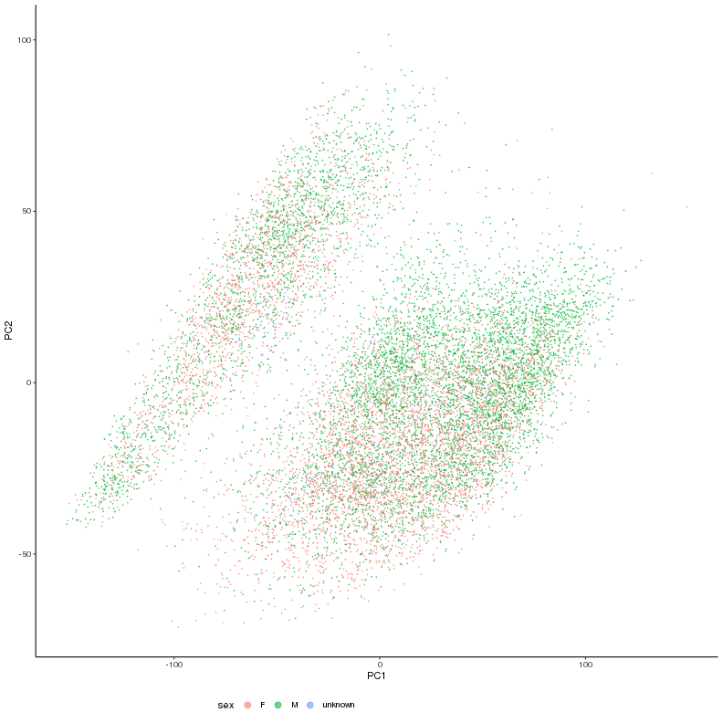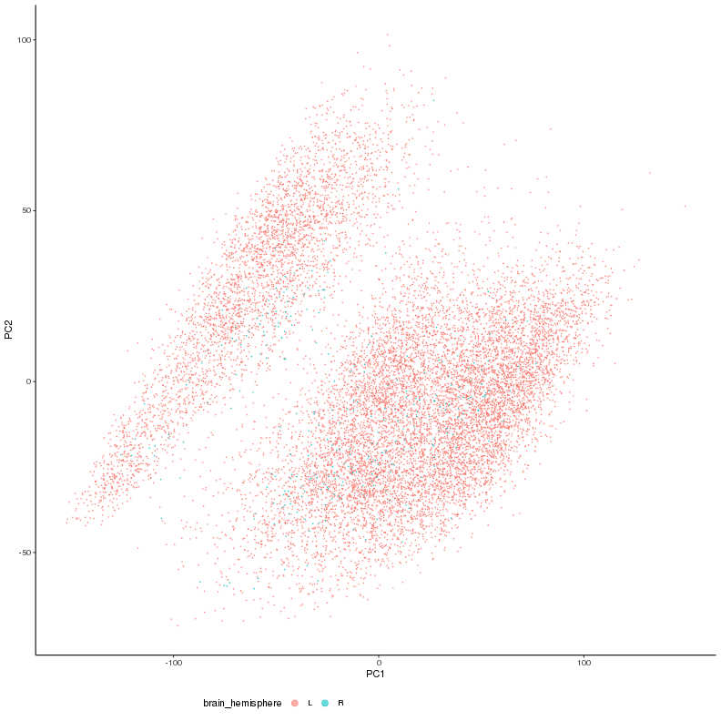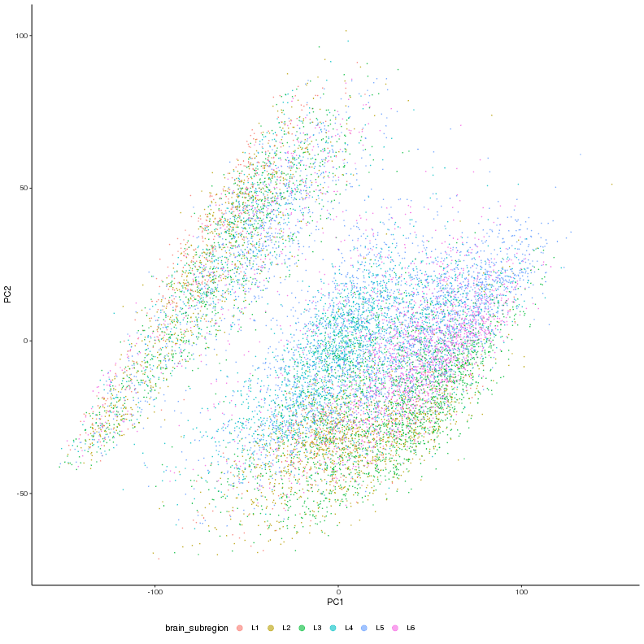
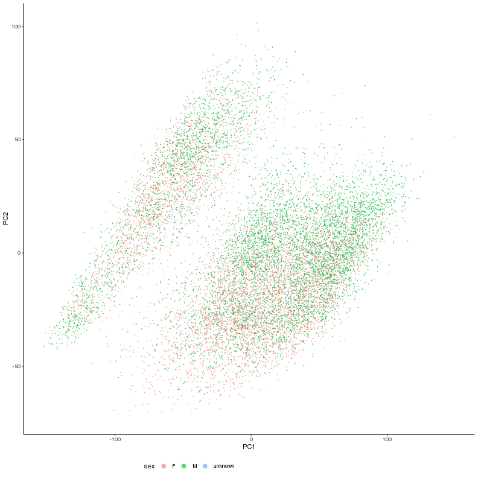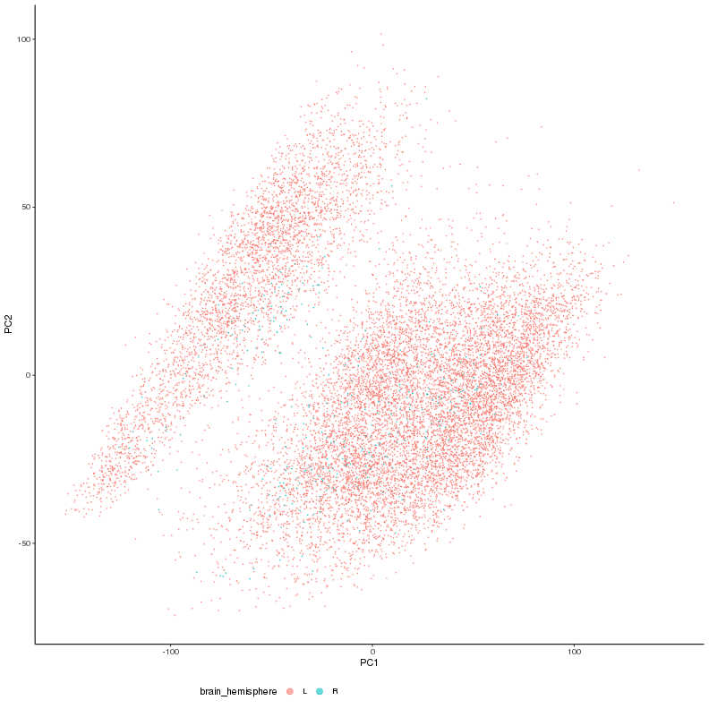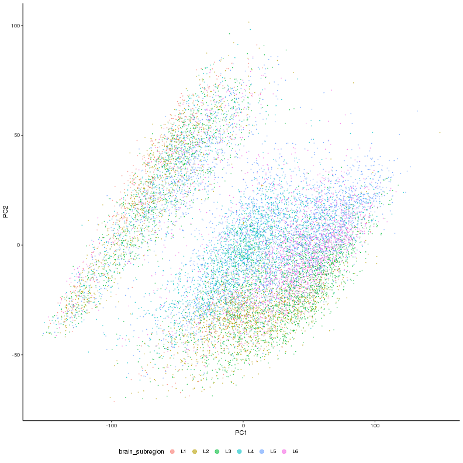 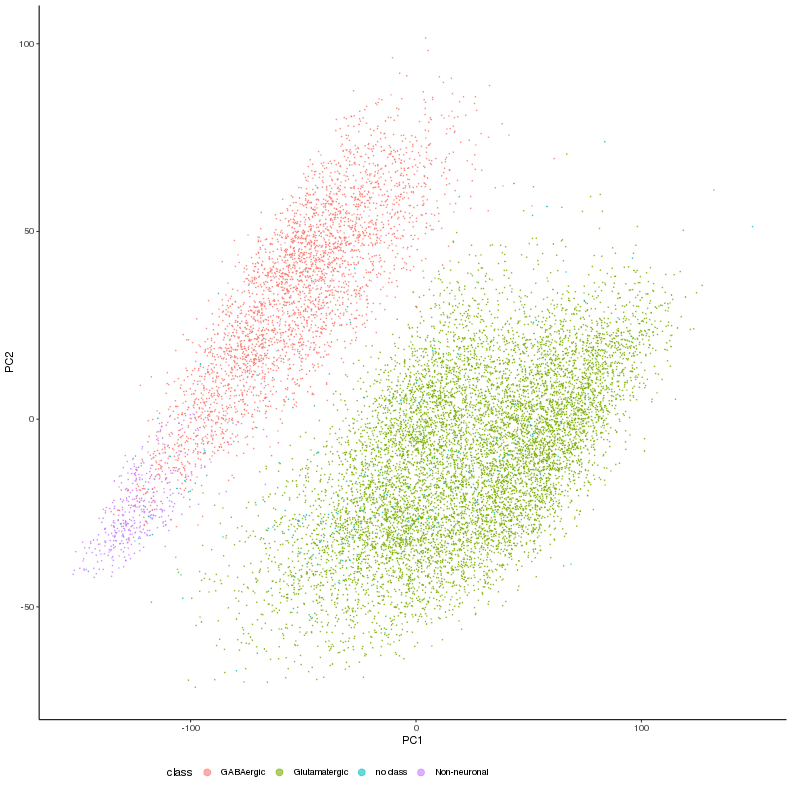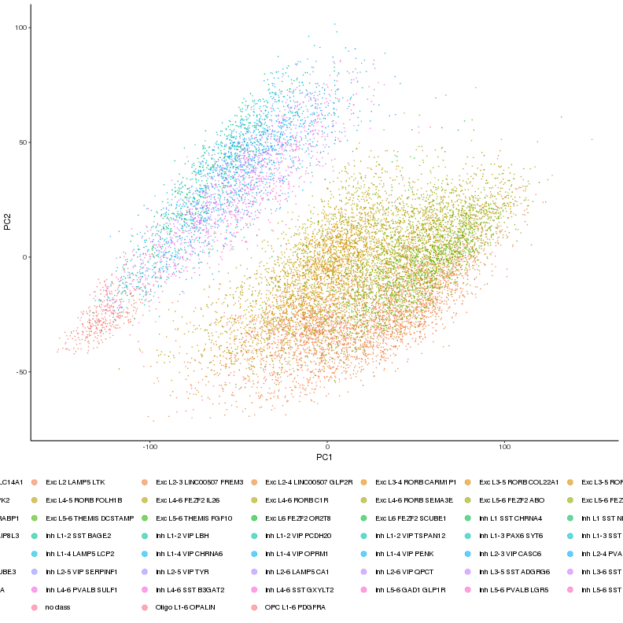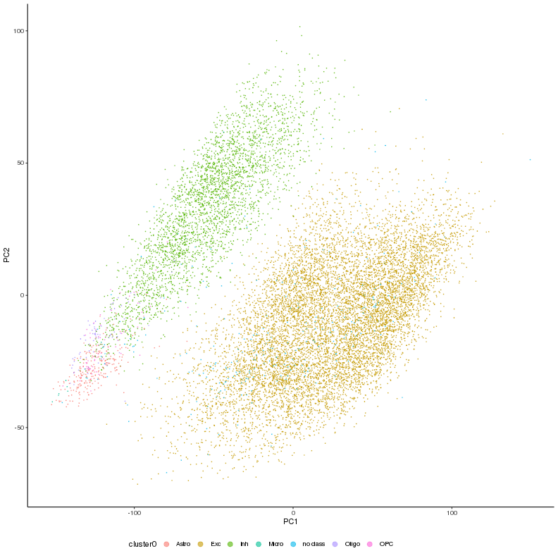
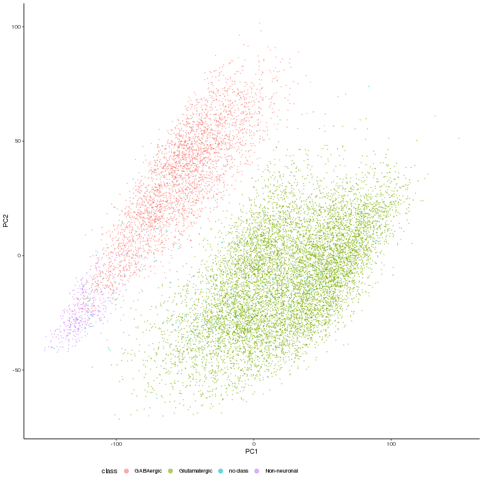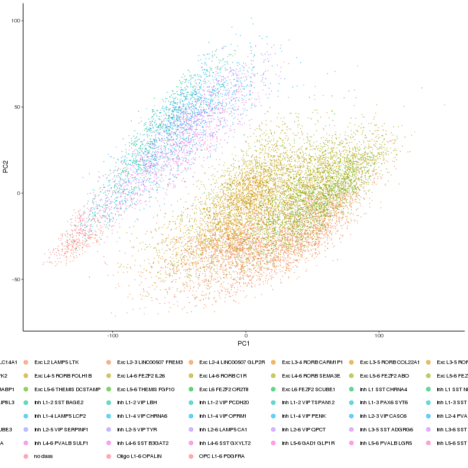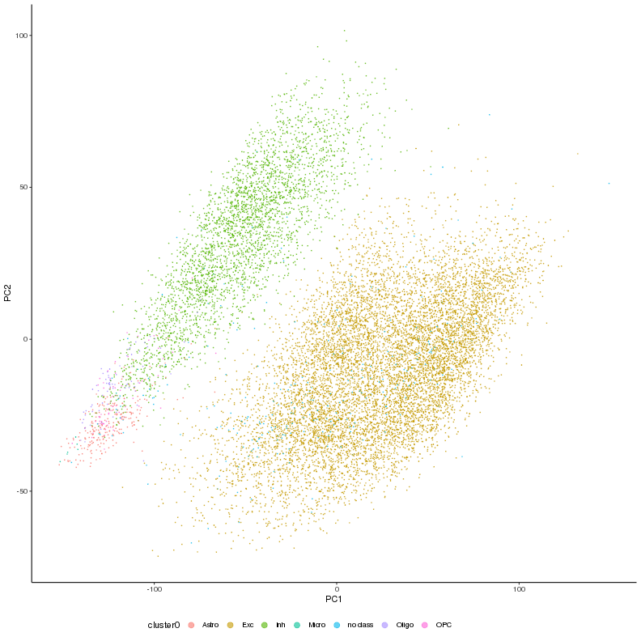This markdown is for analyzing the Allen Brain Atlas MTG dataset. While some details of their analysis is provided here, we ran a workflow similar to the DroNc dataset.
The packages required for the analysis are as follows:
The dataset is available here. This markdown is designed to download all necessary packages and input data objects for analysis.
Before running this R markdown, change the following repo_dir and data_dir variables to your own respective local working directory. Also, determine if the analysis will be conducted with exon counts only(exon_only = TRUE) or with both exon and intron counts summed together (exon_only = FALSE).
# Specifying working directories
repo_dir = "/pine/scr/p/l/pllittle/CS_eQTL/s3_Real/scRNAseq_pipelines"
data_dir = file.path(repo_dir,"MTG")
setwd(data_dir)
# Analysis Plans
exon_only = TRUE
# Source/Libraries
source(file.path(repo_dir,"SOURCE.R"))
# biocLite("BiocUpgrade")
bio_packs = c("SingleCellExperiment","DropletUtils","biomaRt","scater","scran","SC3")
if( !all(bio_packs %in% installed.packages()[,"Package"]) ){
source("https://bioconductor.org/biocLite.R")
biocLite(bio_packs,suppressUpdates = TRUE)
}
cran_packs = c("stringi","irlba")
if( !all(cran_packs %in% installed.packages()[,"Package"]) ){
install.packages(cran_packs)
}
suppressPackageStartupMessages(library(SingleCellExperiment))
suppressPackageStartupMessages(library(DropletUtils))
suppressPackageStartupMessages(library(biomaRt))
suppressPackageStartupMessages(library(scater))
suppressPackageStartupMessages(library(scran))
suppressPackageStartupMessages(library(limma))
# Import counts
if( exon_only ){
counts_fn = file.path(data_dir,"exons.rds")
} else {
counts_fn = file.path(data_dir,"exons_introns.rds")
}
if( !file.exists(counts_fn) ){
file_link = "http://celltypes.brain-map.org/api/v2/well_known_file_download/694416044"
file_name = strsplit(file_link,"/")[[1]]
file_name = file_name[length(file_name)]
file_name = file.path(data_dir,file_name)
if( !file.exists(file_name) ){
cmd = sprintf("cd %s; wget %s",data_dir,file_link)
system(cmd)
}
cmd = sprintf("cd %s; unzip -o %s",data_dir,file_name); system(cmd)
exons_fn = file.path(data_dir,"human_MTG_2018-06-14_exon-matrix.csv")
num_lines = as.numeric(system(sprintf("wc -l %s | cut -d ' ' -f1",exons_fn),intern = TRUE))
cat(paste0("Reading in ",exons_fn,"\n"))
exon_counts = read.delim(exons_fn,sep = ',',header = TRUE,row.names = 1,check.names = FALSE,nrows = num_lines - 1)
exon_counts = as.matrix(exon_counts)
introns_fn = file.path(data_dir,"human_MTG_2018-06-14_intron-matrix.csv")
num_lines = as.numeric(system(sprintf("wc -l %s | cut -d ' ' -f1",introns_fn),intern = TRUE))
cat(paste0("Reading in ",introns_fn,"\n"))
intron_counts = read.delim(introns_fn,sep = ',',header = TRUE,row.names = 1,check.names = FALSE,nrows = num_lines - 1)
intron_counts = as.matrix(intron_counts)
exon_intron_counts = exon_counts + intron_counts
saveRDS(exon_counts,file.path(data_dir,"exons.rds"))
saveRDS(intron_counts,file.path(data_dir,"introns.rds"))
saveRDS(exon_intron_counts,file.path(data_dir,"exons_introns.rds"))
}
counts = readRDS(counts_fn)
cell_data = smart_RT("human_MTG_2018-06-14_samples-columns.csv",sep=',',header=TRUE)
# Double check samples are correctly sorted
all(colnames(counts) == cell_data$sample_name)
## [1] TRUE
sce = SingleCellExperiment(assays = list(counts = as.matrix(counts)),colData = cell_data)
colData(sce)$cluster0 = sapply(colData(sce)$cluster,function(xx) strsplit(xx," ")[[1]][1],USE.NAMES=FALSE)
colData(sce)$cluster0[which(colData(sce)$cluster0 == "no")] = "no class"
rm(counts,cell_data)
# Import gene info
gene_dat = smart_RT("human_MTG_2018-06-14_genes-rows.csv",sep=',',header=TRUE)
all(rownames(sce) == as.character(gene_dat$entrez_id))
## [1] TRUE
rowData(sce) = gene_dat; rm(gene_dat)
rownames(sce) = rowData(sce)$gene
sce
## class: SingleCellExperiment
## dim: 50281 15928
## metadata(0):
## assays(1): counts
## rownames(50281): 3.8-1.2 3.8-1.3 ... bA255A11.4 bA395L14.12
## rowData names(5): gene chromosome entrez_id gene_name
## mouse_homologenes
## colnames(15928): F1S4_160106_001_B01 F1S4_160106_001_C01 ...
## F2S4_170405_060_F01 F2S4_170405_060_H01
## colData names(35): sample_name sample_id ... cluster cluster0
## reducedDimNames(0):
## spikeNames(0):
# Checking spikes
rowData(sce)[grep("^ERCC",rowData(sce)$gene),]
## DataFrame with 10 rows and 5 columns
## gene chromosome entrez_id
## <character> <character> <integer>
## 1 ERCC1 19 2067
## 2 ERCC2 19 2068
## 3 ERCC3 2 2071
## 4 ERCC4 16 2072
## 5 ERCC5 13 2073
## 6 ERCC6 10 2074
## 7 ERCC6-PGBD3 10 101243544
## 8 ERCC6L X 54821
## 9 ERCC6L2 9 375748
## 10 ERCC8 5 1161
## gene_name mouse_homologenes
## <character> <character>
## 1 excision repair cross-complementation group 1 Ercc1
## 2 excision repair cross-complementation group 2 Ercc2
## 3 excision repair cross-complementation group 3 Ercc3
## 4 excision repair cross-complementation group 4 Ercc4
## 5 excision repair cross-complementation group 5 Ercc5
## 6 excision repair cross-complementation group 6 Ercc6
## 7 ERCC6-PGBD3 readthrough
## 8 excision repair cross-complementation group 6-like Ercc6l
## 9 excision repair cross-complementation group 6-like 2 Ercc6l2
## 10 excision repair cross-complementation group 8 Ercc8
sce
## class: SingleCellExperiment
## dim: 50281 15928
## metadata(0):
## assays(1): counts
## rownames(50281): 3.8-1.2 3.8-1.3 ... bA255A11.4 bA395L14.12
## rowData names(5): gene chromosome entrez_id gene_name
## mouse_homologenes
## colnames(15928): F1S4_160106_001_B01 F1S4_160106_001_C01 ...
## F2S4_170405_060_F01 F2S4_170405_060_H01
## colData names(35): sample_name sample_id ... cluster cluster0
## reducedDimNames(0):
## spikeNames(0):
Next step we apply QC based on a set of features per cell. We will look at ribosomal genes. The imported file can be found here.
file_link = "https://www.genenames.org/cgi-bin/genefamilies/set/1054/download/branch"
file_name = strsplit(file_link,"/")[[1]]
file_name = file_name[length(file_name)]
ribo_fn = file.path(data_dir,file_name)
if( !file.exists(ribo_fn) ){
cmd = sprintf("cd %s; wget %s",data_dir,file_link)
print(cmd)
system(cmd)
}
ribo = smart_RT(ribo_fn,sep='\t',header=TRUE)
dim(ribo)
## [1] 163 12
ribo[1:2,]
## HGNC.ID Approved.Symbol Approved.Name Status Previous.Symbols
## 1 10298 RPL10 ribosomal protein L10 Approved
## 2 10299 RPL10A ribosomal protein L10a Approved NEDD6
## Synonyms Chromosome Accession.Numbers
## 1 NOV, QM, DXS648E, DXS648, FLJ23544, L10 Xq28 AB007170
## 2 Csa-19, L10A 6p21.31 U12404
## RefSeq.IDs Gene.Family.Tag Gene.family.description Gene.family.ID
## 1 NM_006013 RPL L ribosomal proteins 729
## 2 NM_007104 RPL L ribosomal proteins 729
table(rowData(sce)$chromosome)
##
## 1 10 11 12 13 14 15 16 17 18 19 2 20 21 22
## 4688 2038 2793 2387 1322 1931 1712 1818 2292 937 2413 3592 1243 725 1128
## 3 4 5 6 7 8 9 MT X Y
## 2776 2250 2375 2685 2579 1999 2129 37 1969 463
is_mito = which(rowData(sce)$chromosome == "MT")
is_ribo = which(rowData(sce)$gene %in% ribo$Approved.Symbol)
length(is_mito)
## [1] 37
length(is_ribo)
## [1] 163
Now we will calculate QC metrics for each sample. The code and filtering below are motivated by the vignette presented here.
sort(names(colData(sce)))
## [1] "age_days" "brain_hemisphere"
## [3] "brain_region" "brain_subregion"
## [5] "class" "cluster"
## [7] "cluster0" "complexity_cg"
## [9] "donor" "facs_container"
## [11] "facs_date" "facs_sort_criteria"
## [13] "genes_detected_cpm_criterion" "genes_detected_fpkm_criterion"
## [15] "library_prep_avg_size_bp" "library_prep_set"
## [17] "organism" "percent_aligned_reads_total"
## [19] "percent_ecoli_reads" "percent_exon_reads"
## [21] "percent_intergenic_reads" "percent_intron_reads"
## [23] "percent_mt_exon_reads" "percent_reads_unique"
## [25] "percent_rrna_reads" "percent_synth_reads"
## [27] "rna_amplification_set" "sample_id"
## [29] "sample_name" "sample_type"
## [31] "seq_batch" "seq_name"
## [33] "seq_tube" "sex"
## [35] "total_reads"
sort(names(rowData(sce)))
## [1] "chromosome" "entrez_id" "gene"
## [4] "gene_name" "mouse_homologenes"
sce = calculateQCMetrics(sce,feature_controls=list(Mt=is_mito, Ri=is_ribo))
## Note that the names of some metrics have changed, see 'Renamed metrics' in ?calculateQCMetrics.
## Old names are currently maintained for back-compatibility, but may be removed in future releases.
sort(names(colData(sce)))
## [1] "age_days"
## [2] "brain_hemisphere"
## [3] "brain_region"
## [4] "brain_subregion"
## [5] "class"
## [6] "cluster"
## [7] "cluster0"
## [8] "complexity_cg"
## [9] "donor"
## [10] "facs_container"
## [11] "facs_date"
## [12] "facs_sort_criteria"
## [13] "genes_detected_cpm_criterion"
## [14] "genes_detected_fpkm_criterion"
## [15] "is_cell_control"
## [16] "library_prep_avg_size_bp"
## [17] "library_prep_set"
## [18] "log10_total_counts"
## [19] "log10_total_counts_endogenous"
## [20] "log10_total_counts_feature_control"
## [21] "log10_total_counts_Mt"
## [22] "log10_total_counts_Ri"
## [23] "log10_total_features"
## [24] "log10_total_features_by_counts"
## [25] "log10_total_features_by_counts_endogenous"
## [26] "log10_total_features_by_counts_feature_control"
## [27] "log10_total_features_by_counts_Mt"
## [28] "log10_total_features_by_counts_Ri"
## [29] "log10_total_features_endogenous"
## [30] "log10_total_features_feature_control"
## [31] "log10_total_features_Mt"
## [32] "log10_total_features_Ri"
## [33] "organism"
## [34] "pct_counts_endogenous"
## [35] "pct_counts_feature_control"
## [36] "pct_counts_in_top_100_features"
## [37] "pct_counts_in_top_100_features_endogenous"
## [38] "pct_counts_in_top_100_features_feature_control"
## [39] "pct_counts_in_top_100_features_Ri"
## [40] "pct_counts_in_top_200_features"
## [41] "pct_counts_in_top_200_features_endogenous"
## [42] "pct_counts_in_top_200_features_feature_control"
## [43] "pct_counts_in_top_50_features"
## [44] "pct_counts_in_top_50_features_endogenous"
## [45] "pct_counts_in_top_50_features_feature_control"
## [46] "pct_counts_in_top_50_features_Ri"
## [47] "pct_counts_in_top_500_features"
## [48] "pct_counts_in_top_500_features_endogenous"
## [49] "pct_counts_Mt"
## [50] "pct_counts_Ri"
## [51] "pct_counts_top_100_features"
## [52] "pct_counts_top_100_features_endogenous"
## [53] "pct_counts_top_100_features_feature_control"
## [54] "pct_counts_top_100_features_Ri"
## [55] "pct_counts_top_200_features"
## [56] "pct_counts_top_200_features_endogenous"
## [57] "pct_counts_top_200_features_feature_control"
## [58] "pct_counts_top_50_features"
## [59] "pct_counts_top_50_features_endogenous"
## [60] "pct_counts_top_50_features_feature_control"
## [61] "pct_counts_top_50_features_Ri"
## [62] "pct_counts_top_500_features"
## [63] "pct_counts_top_500_features_endogenous"
## [64] "percent_aligned_reads_total"
## [65] "percent_ecoli_reads"
## [66] "percent_exon_reads"
## [67] "percent_intergenic_reads"
## [68] "percent_intron_reads"
## [69] "percent_mt_exon_reads"
## [70] "percent_reads_unique"
## [71] "percent_rrna_reads"
## [72] "percent_synth_reads"
## [73] "rna_amplification_set"
## [74] "sample_id"
## [75] "sample_name"
## [76] "sample_type"
## [77] "seq_batch"
## [78] "seq_name"
## [79] "seq_tube"
## [80] "sex"
## [81] "total_counts"
## [82] "total_counts_endogenous"
## [83] "total_counts_feature_control"
## [84] "total_counts_Mt"
## [85] "total_counts_Ri"
## [86] "total_features"
## [87] "total_features_by_counts"
## [88] "total_features_by_counts_endogenous"
## [89] "total_features_by_counts_feature_control"
## [90] "total_features_by_counts_Mt"
## [91] "total_features_by_counts_Ri"
## [92] "total_features_endogenous"
## [93] "total_features_feature_control"
## [94] "total_features_Mt"
## [95] "total_features_Ri"
## [96] "total_reads"
sort(names(rowData(sce)))
## [1] "chromosome" "entrez_id"
## [3] "gene" "gene_name"
## [5] "is_feature_control" "is_feature_control_Mt"
## [7] "is_feature_control_Ri" "log10_mean_counts"
## [9] "log10_total_counts" "mean_counts"
## [11] "mouse_homologenes" "n_cells_by_counts"
## [13] "n_cells_counts" "pct_dropout_by_counts"
## [15] "pct_dropout_counts" "total_counts"
par(mfrow=c(2,2), mar=c(5, 4, 1, 1), bty="n")
smart_hist(log10(sce$total_counts),xlab="log10(Library sizes)", main="",
breaks=20,ylab="Number of cells")
smart_hist(log10(sce$total_features),xlab="log10(# of expressed genes)",
main="", breaks=20,ylab="Number of cells")
smart_hist(sce$pct_counts_Ri, xlab="Ribosome prop. (%)",
ylab="Number of cells", breaks=40, main="")
smart_hist(sce$pct_counts_Mt, xlab="Mitochondrial prop. (%)",
ylab="Number of cells", breaks=80, main="")
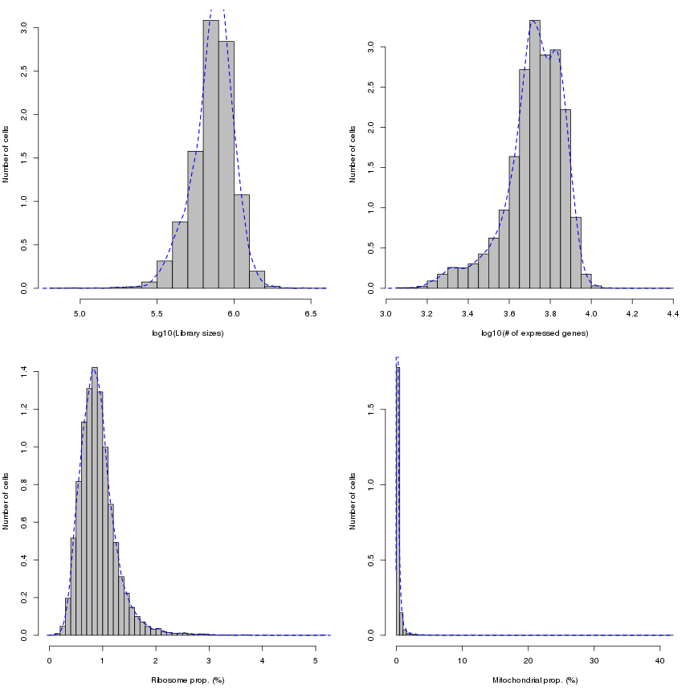
smoothScatter(log10(sce$total_counts), log10(sce$total_features),
xlab="log10(Library sizes)", ylab="log10(# of expressed genes)",
nrpoints=500, cex=0.5)
smoothScatter(log10(sce$total_counts), sce$pct_counts_Ri,
xlab="log10(Library sizes)", ylab="Ribosome prop. (%)",
nrpoints=500, cex=0.5)
smoothScatter(log10(sce$total_counts), sce$pct_counts_Mt,
xlab="log10(Library sizes)", ylab="Mitochondrial prop. (%)",
nrpoints=500, cex=0.5)
## Warning in KernSmooth::bkde2D(x, bandwidth = bandwidth, gridsize = nbin, :
## Binning grid too coarse for current (small) bandwidth: consider increasing
## 'gridsize'
smoothScatter(sce$pct_counts_Ri, sce$pct_counts_Mt,
xlab="Ribosome prop. (%)", ylab="Mitochondrial prop. (%)",
nrpoints=500, cex=0.5)
## Warning in KernSmooth::bkde2D(x, bandwidth = bandwidth, gridsize = nbin, :
## Binning grid too coarse for current (small) bandwidth: consider increasing
## 'gridsize'
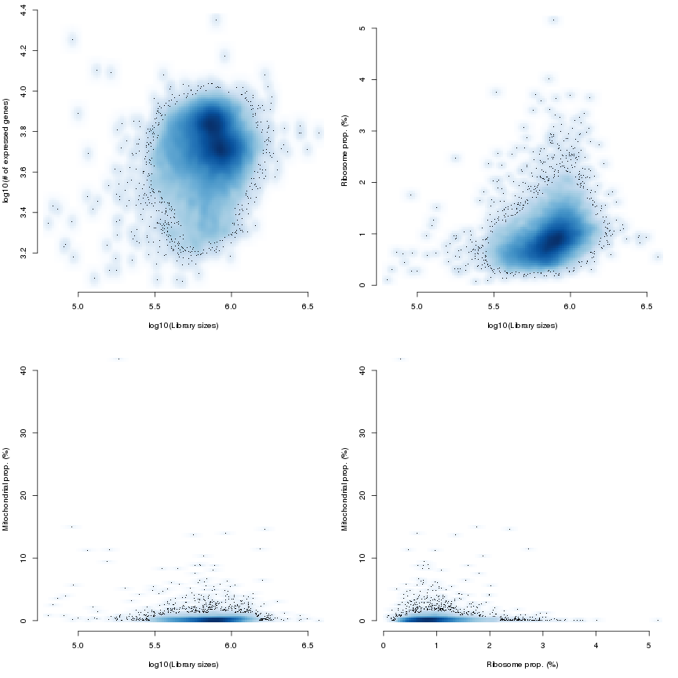
smart_hist(sce$pct_counts_Ri,breaks=40,xlab="Ribosome prop. (%)")
smart_hist(sce$pct_counts_Mt,breaks=40,xlab="Mitochondrial prop. (%)")
plot(x=sce$pct_counts_Ri,y=sce$pct_counts_Mt,pch=16,col=rgb(0,0,0,0.4),
xlab="Ribosome prop. (%)", ylab="Mitochondrial prop. (%)")
# ribo_cut = 1.5; mito_cut = 1; abline(v=ribo_cut,lty=2); abline(h=mito_cut,lty=2)
par(mfrow=c(1,1))
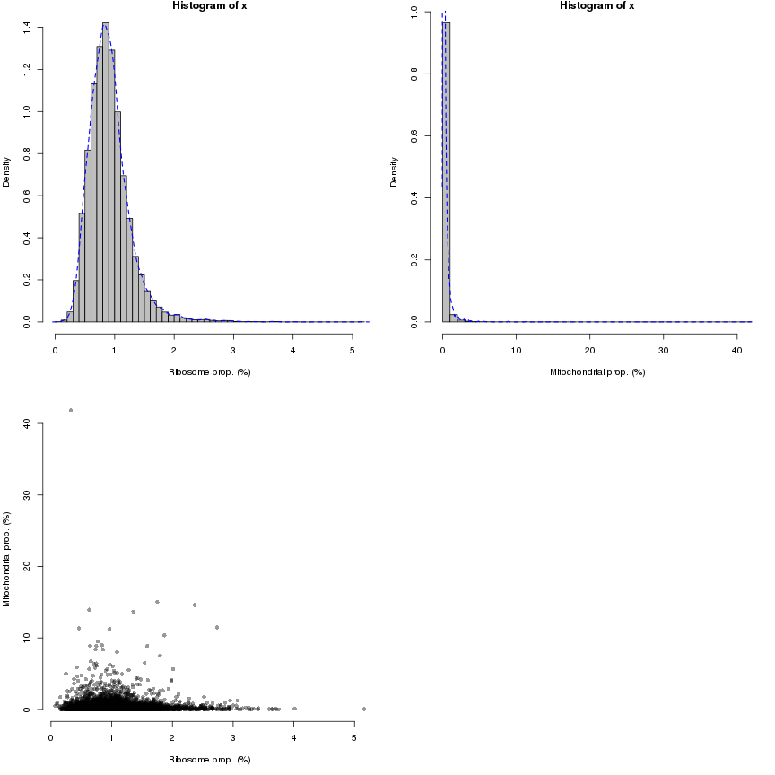
# Removing outliers defined as being lower or higher than 3 MADs from the median of each metric
libsize_drop = isOutlier(sce$total_counts,nmads=3,type="lower",log=TRUE)
feature_drop = isOutlier(sce$total_features_by_counts,nmads=3,type="lower",log=TRUE)
mito_drop = isOutlier(sce$pct_counts_Mt,nmads=3,type="higher")
ribo_drop = isOutlier(sce$pct_counts_Ri,nmads=3,type="higher")
keep = !(libsize_drop | feature_drop | mito_drop | ribo_drop)
data.frame(ByLibSize=sum(libsize_drop),ByFeature=sum(feature_drop),
ByMito=sum(mito_drop),ByRibo=sum(ribo_drop),Remaining=sum(keep))
## ByLibSize ByFeature ByMito ByRibo Remaining
## 1 222 514 1668 434 13330
We then subset the sce object to keep high quality samples(cells). In addition, we save the original object.
sce$PassQC = keep
saveRDS(sce,"preQC.rds")
sce = sce[,keep]
dim(sce)
## [1] 50281 13330
# To load image
# sce = readRDS("preQC.rds"); sce = sce[,which(colData(sce)$PassQC == TRUE)]
rowData(sce)[1:2,]
## DataFrame with 2 rows and 16 columns
## gene chromosome entrez_id
## <character> <character> <integer>
## 1 3.8-1.2 6 353007
## 2 3.8-1.3 6 353008
## gene_name mouse_homologenes
## <character> <character>
## 1 HLA complex group 26 (non-protein coding) pseudogene
## 2 HLA complex group 26 (non-protein coding) pseudogene
## is_feature_control is_feature_control_Mt is_feature_control_Ri
## <logical> <logical> <logical>
## 1 FALSE FALSE FALSE
## 2 FALSE FALSE FALSE
## mean_counts log10_mean_counts n_cells_by_counts
## <numeric> <numeric> <integer>
## 1 0.00878955298844802 0.00380057604028069 7
## 2 0.0573204419889503 0.024206628837133 21
## pct_dropout_by_counts total_counts log10_total_counts n_cells_counts
## <numeric> <integer> <numeric> <integer>
## 1 99.9560522350578 140 2.14921911265538 7
## 2 99.8681567051733 913 2.96094619573383 21
## pct_dropout_counts
## <numeric>
## 1 99.9560522350578
## 2 99.8681567051733
summary(rowData(sce)$mean_counts)
## Min. 1st Qu. Median Mean 3rd Qu. Max.
## 0.00 0.02 0.31 15.13 5.56 101644.02
summary(rowData(sce)$mean_counts[rowData(sce)$mean_counts>0])
## Min. 1st Qu. Median Mean 3rd Qu. Max.
## 0.00 0.03 0.38 15.75 6.28 101644.02
summary(rowData(sce)$n_cells_counts)
## Min. 1st Qu. Median Mean 3rd Qu. Max.
## 0 30 244 1744 1893 15928
par(mfrow=c(2,2), mar=c(5,4,1,1))
smart_hist(log10(rowData(sce)$mean_counts+1e-6),main="",
breaks=40, xlab="log10(ave # of UMI + 1e-6)")
smart_hist(log10(rowData(sce)$n_cells_counts+1),main="",
breaks=40, xlab="log10(# of expressed cells + 1)")
smoothScatter(log10(rowData(sce)$mean_counts+1e-6),
log10(rowData(sce)$n_cells_counts + 1),
xlab="log10(ave # of UMI + 1e-6)",
ylab="log10(# of expressed cells + 1)")
par(mfrow=c(1,1),mar=c(5,4,4,2)+0.1)
tb1 = table(rowData(sce)$n_cells_counts)
tb1[1:11]
##
## 0 1 2 3 4 5 6 7 8 9 10
## 2003 567 555 559 662 574 539 562 494 441 445
# Filter genes
par(mfrow=c(2,1),mar=c(5,4,1,1))
smart_hist(rowData(sce)$n_cells_counts,breaks=50,xlab="# of expressed cells")
smart_hist(log10(1+rowData(sce)$n_cells_counts),breaks=50,xlab="log10(1 + # of expressed cells)")
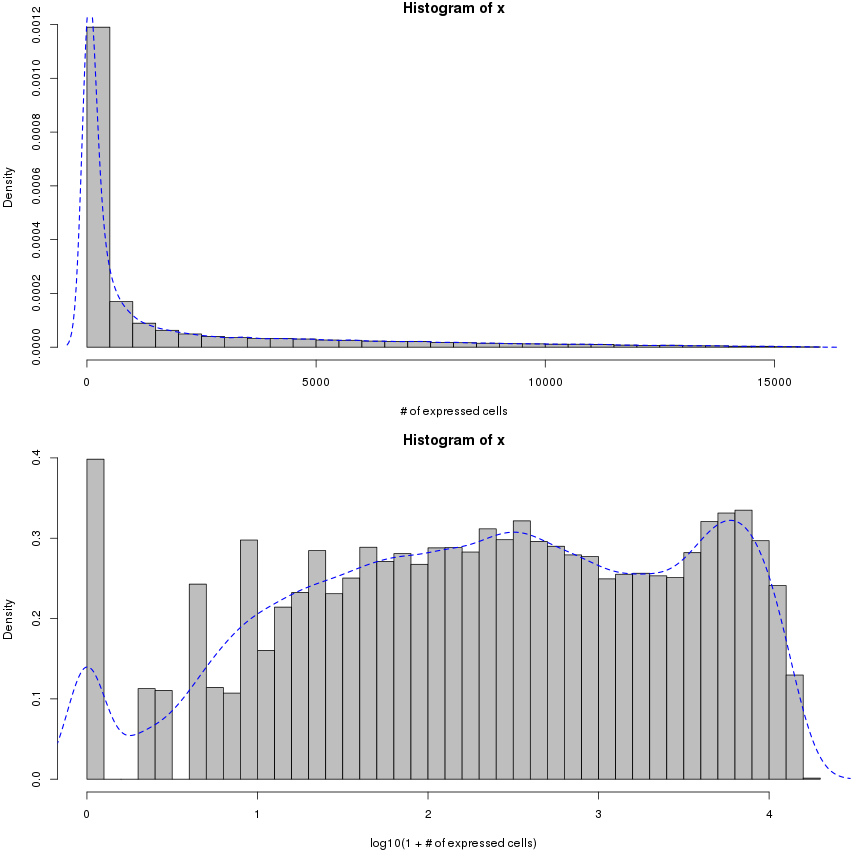
par(mfrow=c(1,1))
n_cell_count_filter = rowData(sce)$n_cells_counts > 5
table(n_cell_count_filter)
## n_cell_count_filter
## FALSE TRUE
## 4920 45361
min_detect_min_sample = apply(counts(sce),1,function(xx) length(which(xx > 0)) > 10)
table(min_detect_min_sample)
## min_detect_min_sample
## FALSE TRUE
## 8330 41951
min_mean_counts0 = rowData(sce)$mean_counts > 0
table(min_mean_counts0)
## min_mean_counts0
## FALSE TRUE
## 2003 48278
min_mean_counts1 = rowData(sce)$mean_counts > 1
table(min_mean_counts1)
## min_mean_counts1
## FALSE TRUE
## 30728 19553
table(n_cell_count_filter,min_detect_min_sample,min_mean_counts0,min_mean_counts1)
## , , min_mean_counts0 = FALSE, min_mean_counts1 = FALSE
##
## min_detect_min_sample
## n_cell_count_filter FALSE TRUE
## FALSE 2003 0
## TRUE 0 0
##
## , , min_mean_counts0 = TRUE, min_mean_counts1 = FALSE
##
## min_detect_min_sample
## n_cell_count_filter FALSE TRUE
## FALSE 2917 0
## TRUE 3410 22398
##
## , , min_mean_counts0 = FALSE, min_mean_counts1 = TRUE
##
## min_detect_min_sample
## n_cell_count_filter FALSE TRUE
## FALSE 0 0
## TRUE 0 0
##
## , , min_mean_counts0 = TRUE, min_mean_counts1 = TRUE
##
## min_detect_min_sample
## n_cell_count_filter FALSE TRUE
## FALSE 0 0
## TRUE 0 19553
sce = sce[which(rowData(sce)$mean_counts > 1),]
dim(sce)
## [1] 19553 13330
# Next we check those highly expressed genes
par(mfrow=c(1,2),mar=c(5,8,1,1))
od1 = order(rowData(sce)$mean_counts, decreasing = TRUE)
barplot(rowData(sce)$mean_counts[od1[20:1]], las=1,
names.arg=rowData(sce)$gene[od1[20:1]],
horiz=TRUE, cex.names=1, cex.axis=0.7,
xlab="ave # of UMI")
barplot(log10(rowData(sce)$mean_counts[od1[20:1]]), las=1,
names.arg=rowData(sce)$gene[od1[20:1]],
horiz=TRUE, cex.names=1, cex.axis=0.7,
xlab="log10(ave # of UMI)")
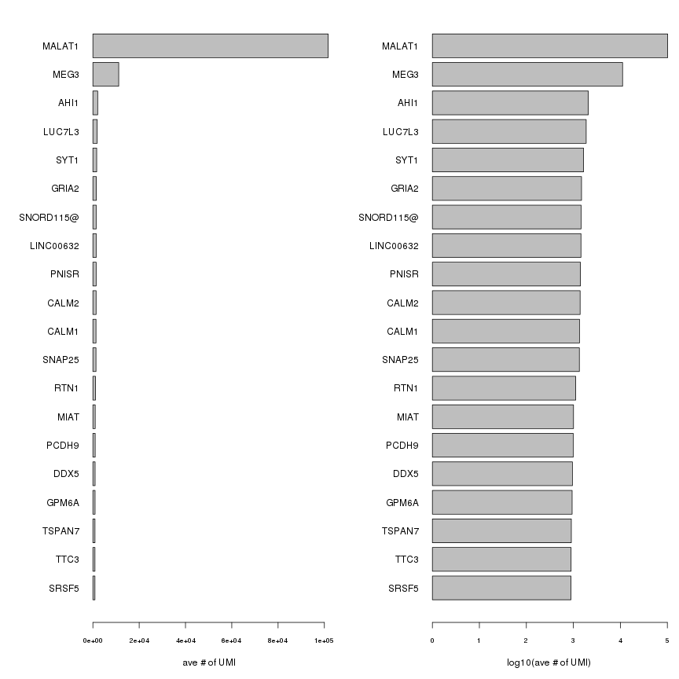
par(mar=c(5,4,1,1))
saveRDS(sce,"post_gene_filter.rds")
# To load image
# sce = readRDS("post_gene_filter.rds")
A simple solution for normalization and stablizing expression varaince across genes is to tranform the count data by log(count/size.factor + 1). One may calcualte size.factor per cell as the total number of UMIs, and this assumes the total expression are the same across all the cells. However, the total expression of each cell may vary with respect to cell type and/or cell size, and the computeSumFactors function in R package scran provides a more sophisicated way to calcualte size.factor to allow such variaation across cells [@lun2016pooling]. computeSumFactors can use initial clustering of cells to normalize expression within and beetween clusters. Within a cluster, it estimates the size factor for many groups of cells so that there are more groups than cells, and then it can calcualte the size factor per cell using a lienar deconvolution system.
As shown in the following plot, the final size factor estimation is indeed highly correlated with the naive definition by total count.
Finally, the command normalize(sce) adds the normalized expression into the variable sce.
min_mean = 1
date()
## [1] "Mon Nov 5 15:31:04 2018"
clusters = quickCluster(sce, min.mean=min_mean, method="igraph")
table(clusters)
## clusters
## 1 2 3 4 5 6 7
## 946 1284 1539 334 3513 4036 1678
date()
## [1] "Mon Nov 5 15:34:54 2018"
sce = computeSumFactors(sce, cluster=clusters, min.mean=min_mean)
date()
## [1] "Mon Nov 5 15:40:12 2018"
summary(sizeFactors(sce))
## Min. 1st Qu. Median Mean 3rd Qu. Max.
## 0.3005 0.8219 0.9922 1.0000 1.1535 6.4986
# Remove cells with negative or very small size factors
dim(sce)
## [1] 19553 13330
sce = sce[,which(sizeFactors(sce) > 0)]
dim(sce)
## [1] 19553 13330
par(mfrow=c(1,2), mar=c(5,4,2,1), bty="n")
smoothScatter(sce$total_counts, sizeFactors(sce), log="xy",
xlab="total counts", ylab="size factors")
plot(sce$total_counts, sizeFactors(sce), log="xy",
xlab="total counts", ylab="size factors",
cex=0.3, pch=20, col=rgb(0.1,0.2,0.7,0.3))
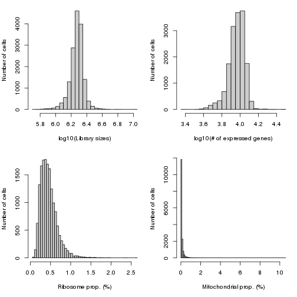
par(mfrow=c(1,1))
sce = normalize(sce)
saveRDS(sce,"post_norm.rds")
The link at here mentions the choice of setting min.mean.
Since the MTG dataset does not contain spikeIn transcripts, we implemented the code below similar to here.
For dimension reduction, such as calculating PCA or performing TSNE, we should start by identifying a subset of genes with high level of biological signal relative to background (technical) noise. The decomposeVar function from R/cran is designed for this task.
date()
## [1] "Mon Nov 5 15:43:17 2018"
new_trend = makeTechTrend(x=sce)
date()
## [1] "Mon Nov 5 15:48:56 2018"
fit = trendVar(sce, use.spikes=FALSE, loess.args=list(span=0.05))
par(mfrow=c(1,1), mar=c(5,4,2,1), bty="n")
plot(fit$mean, fit$vars, pch=20, col=rgb(0.1,0.2,0.7,0.6),
xlab="log(mean)", ylab="var")
curve(new_trend(x), col="red", lwd=2, add=TRUE)
curve(fit$trend(x), col="orange", lwd=2, add=TRUE)
legend("topright", legend=c("Poisson noise", "observed trend"),
lty=1, lwd=2, col=c("red", "orange"), bty="n")
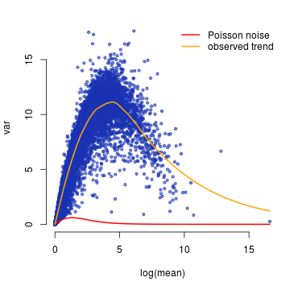
The above function makeTechTrend() assumes a Poisson model and from the above plot, it is clearly not a suitable fit. So we will keep fit equal to the loess fit from trendVar() rather than setting it equal to the output from makeTechTrend().
# fit$trend = new_trend
dec = decomposeVar(fit=fit)
top_dec = dec[order(dec$bio,decreasing=TRUE),]
top_dec[1:10,]
## DataFrame with 10 rows and 6 columns
## mean total bio
## <numeric> <numeric> <numeric>
## ENC1 6.46897568522746 16.628678834938 8.43783037939368
## GAD1 2.4024213091023 16.5187400191716 7.45143686428273
## SPARCL1 7.46752154947916 13.1935765758566 6.85261720241952
## ARPP21 7.25891975098436 13.4421386002274 6.76418774946179
## SLC6A1 2.66533608460488 16.071961808116 6.4824519643573
## KCNIP4-IT1 5.98579750935527 15.4453475001772 6.38301994618043
## CHN1 8.31754772682424 11.4003777853178 6.33075234070888
## NECAB1 5.66460335462768 15.8505611904774 6.30339027185692
## CCK 5.8124411593409 15.6064656008162 6.28035350903205
## SYNPR 2.78133711115622 15.6698208866094 5.84524345158222
## tech p.value FDR
## <numeric> <numeric> <numeric>
## ENC1 8.19084845554428 0 0
## GAD1 9.06730315488888 0 0
## SPARCL1 6.34095937343706 0 0
## ARPP21 6.6779508507656 0 0
## SLC6A1 9.58950984375866 0 0
## KCNIP4-IT1 9.06232755399677 0 0
## CHN1 5.06962544460892 0 0
## NECAB1 9.54717091862051 0 0
## CCK 9.32611209178411 0 0
## SYNPR 9.82457743502718 0 0
par(mfrow=c(2,2))
smart_hist(dec$bio,breaks=30,xlab="Biological Variance")
smart_hist(dec$FDR,breaks=30,xlab="FDR")
smart_hist(log10(dec$FDR + 1e-6),breaks=30,xlab="log10(FDR + 1e-6)")
par(mfrow=c(1,1))
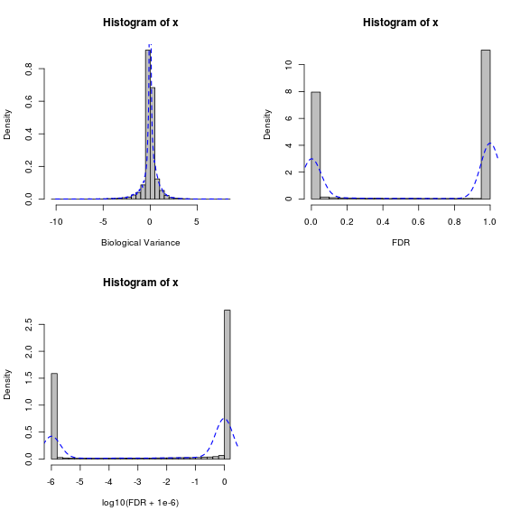
plotExpression(sce, features=rownames(top_dec)[1:10])
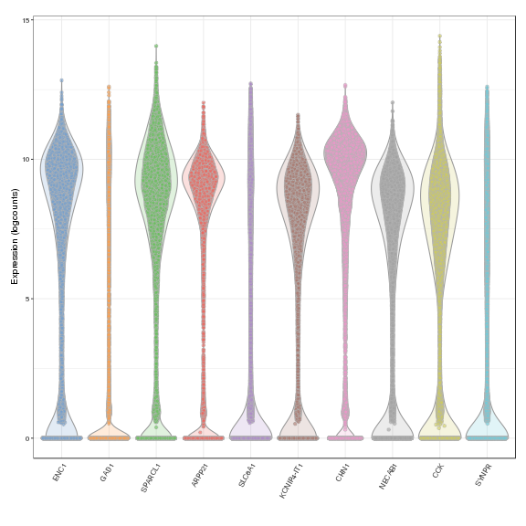
When performing PCA, we can use all the genes or just those genes with high signal-to-noise ratio. TSNE analysis is usually based on the top PCs rather than the original gene expression data. We first perform PCA using all the genes and the function denoisePCA can automatically select the PCs based on modeling of technical noise.
date()
## [1] "Mon Nov 5 15:49:41 2018"
sce = denoisePCA(sce,technical=fit$trend,approx=TRUE)
date()
## [1] "Mon Nov 5 16:00:16 2018"
dim(reducedDim(sce,"PCA"))
## [1] 13330 7
par(mfrow=c(1,1))
plot(log10(attr(reducedDim(sce), "percentVar")), xlab="PC",
ylab="log10(Prop of variance explained)", pch=20, cex=0.6,
col=rgb(0.8, 0.2, 0.2, 0.5))
abline(v=ncol(reducedDim(sce,"PCA")), lty=2, col="red")
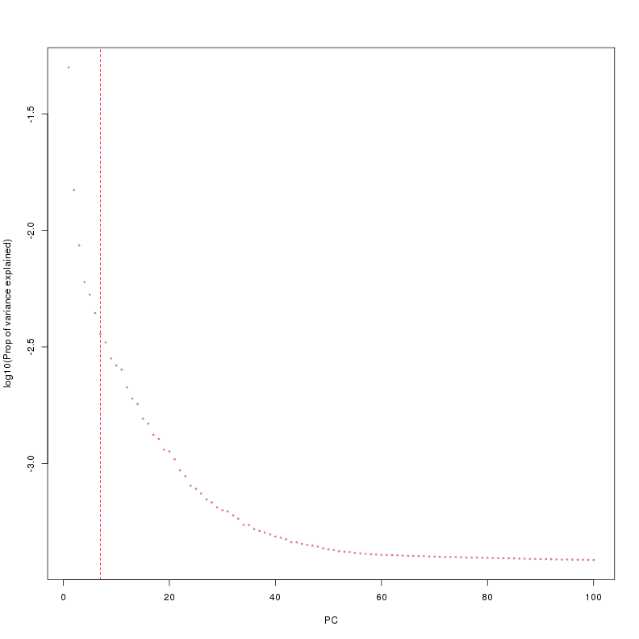
df_redDim = smart_df(sample_name = colnames(sce),reducedDim(sce, "PCA"))
rownames(df_redDim) = NULL
df_redDim$log10_total_features = colData(sce)$log10_total_features
df_redDim$sex = colData(sce)$sex
df_redDim$brain_hemisphere = colData(sce)$brain_hemisphere
df_redDim$brain_subregion = colData(sce)$brain_subregion
df_redDim$facs_sort_criteria = colData(sce)$facs_sort_criteria
df_redDim$class = colData(sce)$class
df_redDim$cluster = colData(sce)$cluster
df_redDim$cluster0 = colData(sce)$cluster0
all_vars = c("log10_total_features","sex","brain_hemisphere",
"brain_subregion","facs_sort_criteria","class","cluster",
"cluster0")
for(one_var in all_vars){
print(ggplot_custom(DATA = df_redDim,
X = "PC1",Y = "PC2",COL = one_var))
}
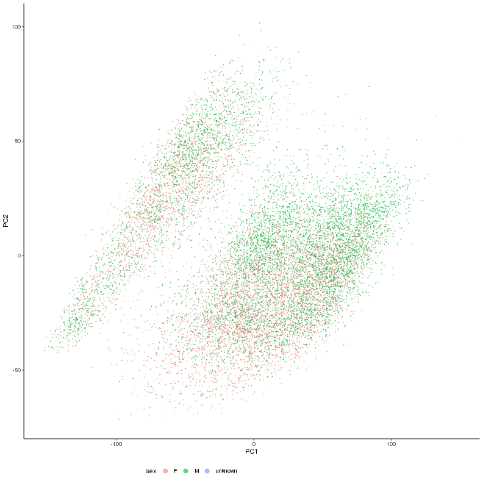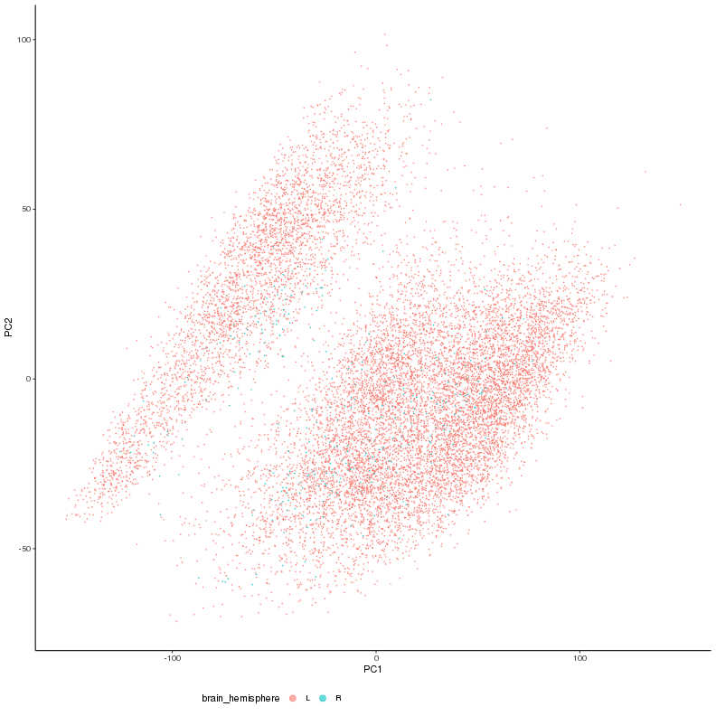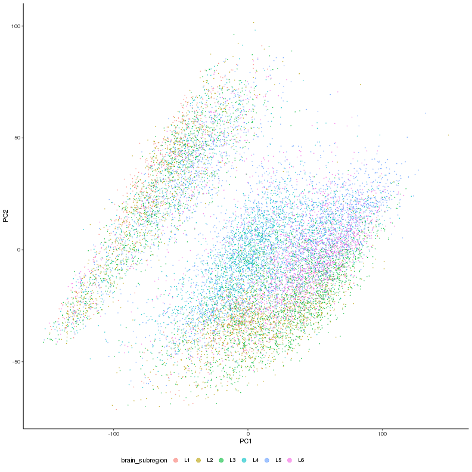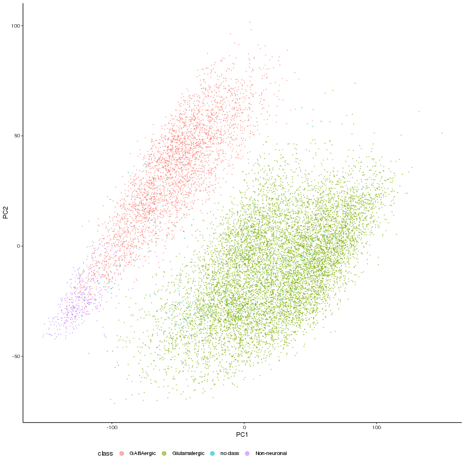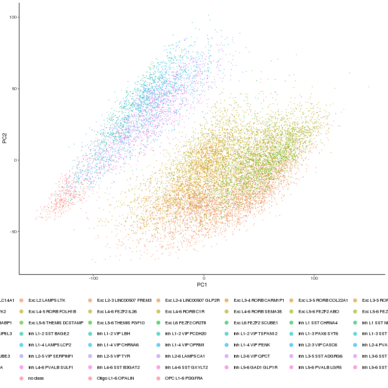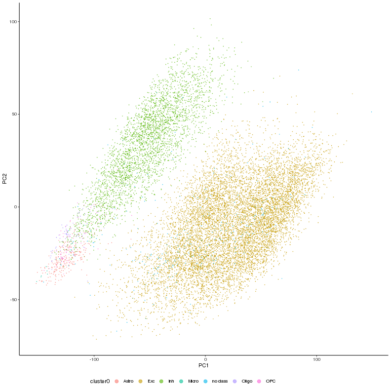
date()
## [1] "Mon Nov 5 16:00:25 2018"
sce = runTSNE(sce,use_dimred="PCA",perplexity=30,rand_seed=100)
date()
## [1] "Mon Nov 5 16:06:35 2018"
df_redDim = smart_df(df_redDim,reducedDim(sce,"TSNE"))
rownames(df_redDim) = NULL
names(df_redDim)[c(ncol(df_redDim)-1,ncol(df_redDim))] = paste0("TSNE",1:2)
for(one_var in all_vars){
print(ggplot_custom(DATA = df_redDim,
X = "TSNE1",Y = "TSNE2",COL = one_var))
}
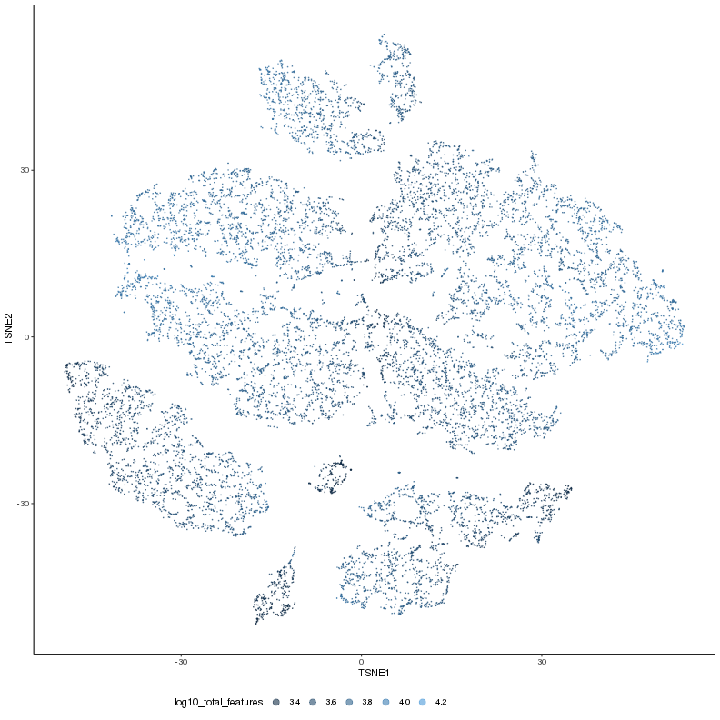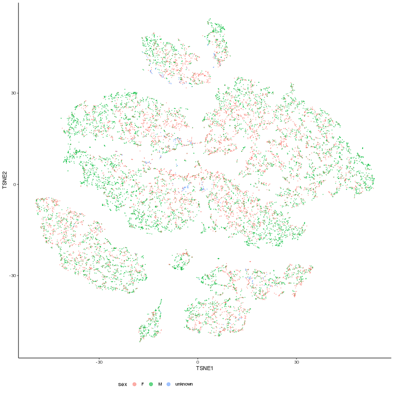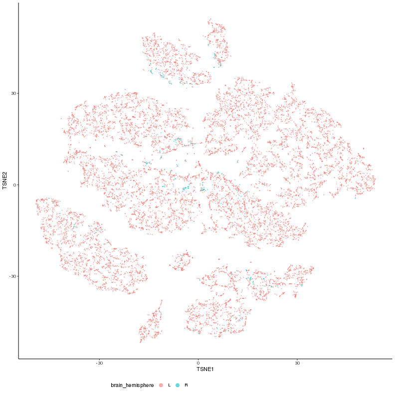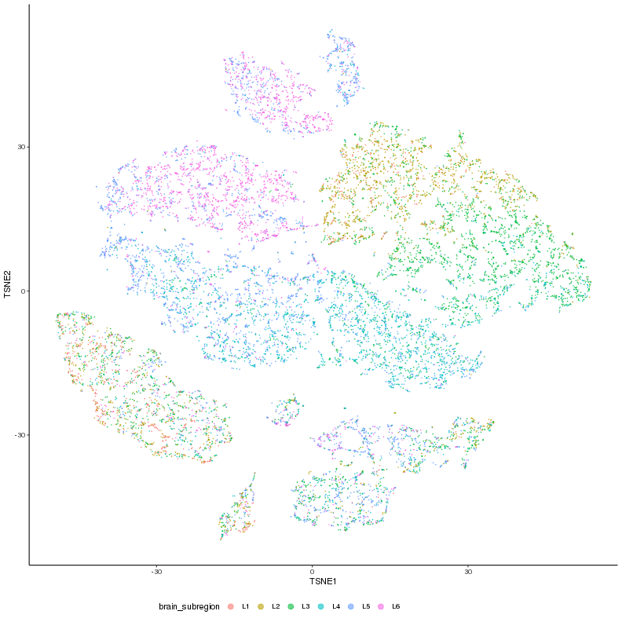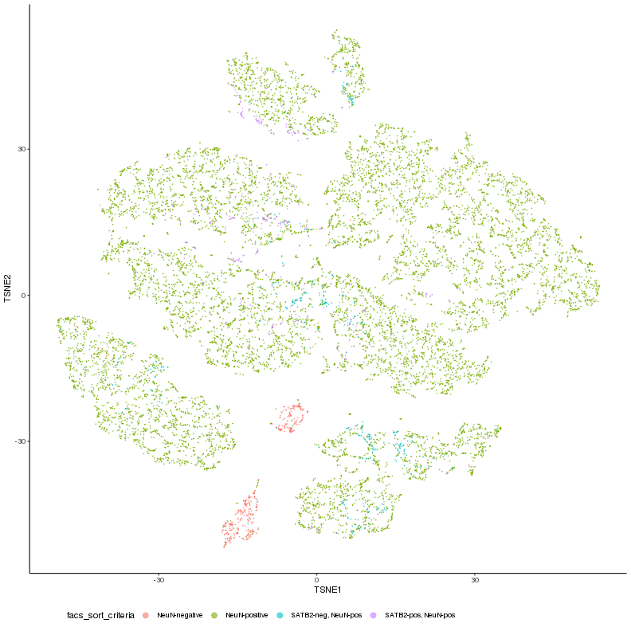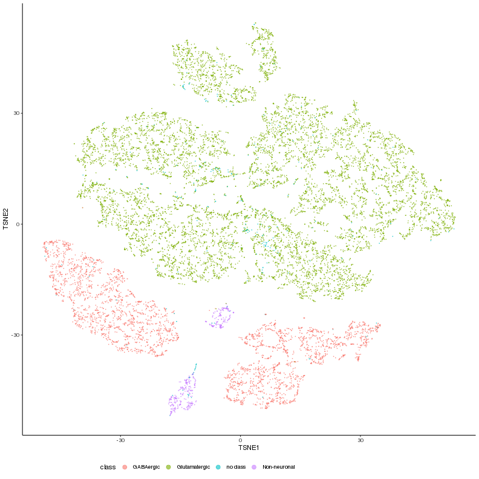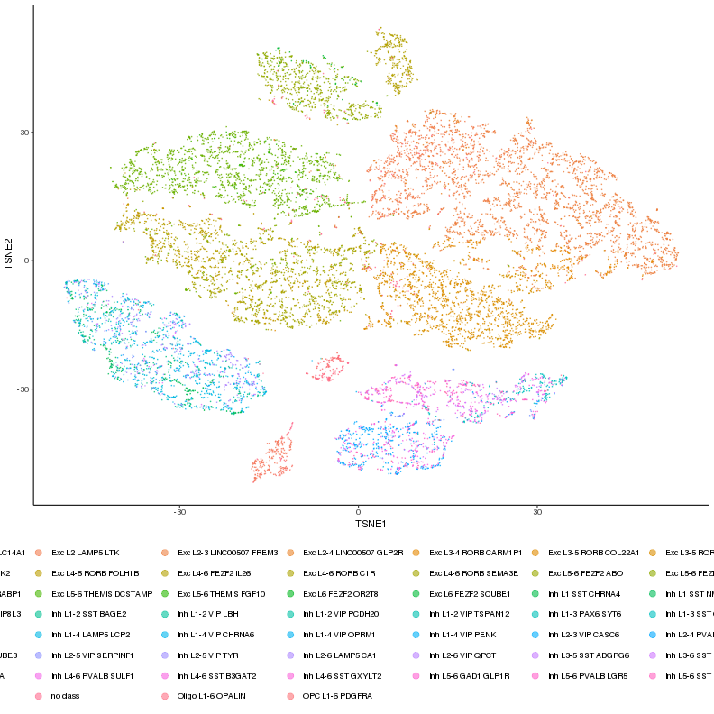
saveRDS(list(sce=sce,dec=dec),"post_redDim_all_genes.rds")
# Note that this contains the results from PCA and TSNE with all genes
# rds = readRDS("post_redDim_all_genes.rds"); sce = rds$sce; dec = rds$dec; rm(rds)
Next we only select approximately the top 1000 highly variable genes for the PCA, based on tuning thresholds on dec$bio and dec$FDR from the earlier variance decomposition, and use the top 50 PCs for TSNE projection.
library(svd)
library(Rtsne)
summary(dec$bio)
## Min. 1st Qu. Median Mean 3rd Qu. Max.
## -9.90110 -0.26727 0.01702 -0.04618 0.32695 8.43783
summary(dec$FDR)
## Min. 1st Qu. Median Mean 3rd Qu. Max.
## 0.0000 0.0000 0.4044 0.4988 1.0000 1.0000
dec1 = dec
dec1$bio[which(dec1$bio < 1e-8)] = 1e-8
dec1$FDR[which(dec1$FDR < 1e-100)] = 1e-100
par(mfrow=c(2,2))
smart_hist(log10(dec1$bio),breaks=100,main="",xlab="log10(bio)")
smart_hist(log10(dec1$FDR),breaks=100,main="",xlab="log10(FDR)")
smoothScatter(log10(dec1$bio),log10(dec1$FDR),xlab="log10(bio)",ylab="log10(FDR)")
summary(dec$FDR[dec$bio > 0.001])
## Min. 1st Qu. Median Mean 3rd Qu. Max.
## 0.0000000 0.0000000 0.0000000 0.0523775 0.0006214 0.9281177
FDR_thres = 1e-50 # 1e-10
bio_thres = 1e-1 # 1e-2
FDR_keep = dec$FDR < FDR_thres
bio_keep = dec$bio > bio_thres
table(FDR_keep,bio_keep)
## bio_keep
## FDR_keep FALSE TRUE
## FALSE 11789 6698
## TRUE 15 1051
w2kp = which(dec1$FDR < FDR_thres & dec1$bio > bio_thres)
# Subsetting highly variable genes for subsequent PCA and TSNE
sce_hvg = sce[w2kp,]
sce_hvg
## class: SingleCellExperiment
## dim: 1051 13330
## metadata(1): log.exprs.offset
## assays(2): counts logcounts
## rownames(1051): AASDHPPT AASS ... ZWINT ZXDB
## rowData names(16): gene chromosome ... n_cells_counts
## pct_dropout_counts
## colnames(13330): F1S4_160106_001_C01 F1S4_160106_001_G01 ...
## F2S4_170405_060_F01 F2S4_170405_060_H01
## colData names(97): sample_name sample_id ...
## pct_counts_top_100_features_Ri PassQC
## reducedDimNames(2): PCA TSNE
## spikeNames(0):
edat = t(as.matrix(logcounts(sce_hvg)))
edat = scale(edat)
dim(edat)
## [1] 13330 1051
edat[1:2,1:3]
## AASDHPPT AASS ABCA8
## F1S4_160106_001_C01 -0.9405765 -0.3007532 -0.1450556
## F1S4_160106_001_G01 0.6180050 -0.3007532 -0.1450556
date()
## [1] "Mon Nov 5 16:09:58 2018"
ppk = propack.svd(edat,neig=50)
date()
## [1] "Mon Nov 5 16:10:10 2018"
pca = t(ppk$d*t(ppk$u))
dim(pca)
## [1] 13330 50
df_hvg = smart_df(pca)
rownames(df_hvg) = NULL
names(df_hvg) = paste0("PC",seq(ncol(df_hvg)))
df_hvg = smart_df(sample_name = colnames(sce_hvg),df_hvg)
df_hvg$log10_total_features = colData(sce_hvg)$log10_total_features
df_hvg$sex = colData(sce_hvg)$sex
df_hvg$brain_hemisphere = colData(sce_hvg)$brain_hemisphere
df_hvg$brain_subregion = colData(sce_hvg)$brain_subregion
df_hvg$facs_sort_criteria = colData(sce_hvg)$facs_sort_criteria
df_hvg$class = colData(sce_hvg)$class
df_hvg$cluster = colData(sce_hvg)$cluster
df_hvg$cluster0 = colData(sce_hvg)$cluster0
all_vars = c("log10_total_features","sex","brain_hemisphere",
"brain_subregion","facs_sort_criteria","class","cluster",
"cluster0")
for(one_var in all_vars){
print(ggplot_custom(DATA = df_hvg,
X = "PC1",Y = "PC2",COL = one_var))
}
set.seed(100)
date()
## [1] "Mon Nov 5 16:10:19 2018"
tsne = Rtsne(pca, pca = FALSE)
date()
## [1] "Mon Nov 5 16:16:39 2018"
df_tsne = smart_df(tsne$Y)
names(df_tsne) = paste0("TSNE",seq(ncol(tsne$Y)))
dim(df_tsne)
## [1] 13330 2
# df_tsne[1:2,]
df_hvg = smart_df(df_hvg,df_tsne)
df_hvg[1:2,]
## sample_name PC1 PC2 PC3 PC4 PC5
## 1 F1S4_160106_001_C01 -8.097259 -0.2014815 7.295970 3.9360922 2.8916705
## 2 F1S4_160106_001_G01 -4.172508 -0.6629105 7.281139 0.6082552 -0.1053634
## PC6 PC7 PC8 PC9 PC10 PC11 PC12
## 1 2.440887 1.151182 -0.628315 1.102461 1.114636 0.387628 1.589772
## 2 -1.984740 -4.487737 -6.788227 4.565291 -1.455726 3.845174 10.006559
## PC13 PC14 PC15 PC16 PC17 PC18 PC19
## 1 -1.934514 0.376387 -1.3027737 4.207579 -2.102668 -2.065592 2.5296738
## 2 5.690378 -3.815942 0.3587115 -1.908718 -1.599769 -1.222584 -0.9246038
## PC20 PC21 PC22 PC23 PC24 PC25 PC26
## 1 -2.860216 -1.205244 2.5837956 -2.4284231 0.6026073 0.2505768 2.267628
## 2 1.261222 2.856862 -0.1447852 -0.7795055 1.3047175 0.2881669 -1.475536
## PC27 PC28 PC29 PC30 PC31 PC32
## 1 1.3672071 2.102565 3.0881205 -0.4170079 -2.5408516 -2.0235607
## 2 0.3243705 2.481185 -0.2767881 -1.6481856 -0.9808562 -0.8542897
## PC33 PC34 PC35 PC36 PC37 PC38 PC39
## 1 -6.5560742 1.645860 0.5577230 2.953759 -1.876040 2.1480840 0.2240653
## 2 -0.9293229 2.249257 0.5591657 3.149219 0.942013 0.8371117 -0.1430096
## PC40 PC41 PC42 PC43 PC44 PC45
## 1 -0.1399115 0.9951322 3.5729789 -0.1840558 -1.625440 0.6136480
## 2 0.1694784 -1.3032569 0.1537778 0.2178183 2.053742 -0.5062235
## PC46 PC47 PC48 PC49 PC50
## 1 -1.3208149 -0.6872233 0.5674192 -0.5873786 -0.5788236
## 2 0.8679845 -0.6557365 -0.4997849 0.9293163 0.1233277
## log10_total_features sex brain_hemisphere brain_subregion
## 1 3.916349 M L L5
## 2 3.918502 M L L5
## facs_sort_criteria class cluster cluster0
## 1 NeuN-positive Glutamatergic Exc L5-6 RORB TTC12 Exc
## 2 NeuN-positive Glutamatergic Exc L5-6 FEZF2 EFTUD1P1 Exc
## TSNE1 TSNE2
## 1 -2.004835 -34.56419
## 2 -4.155737 48.00538
for(one_var in all_vars){
print(ggplot_custom(DATA = df_hvg,
X = "TSNE1",Y = "TSNE2",COL = one_var))
}
reducedDims(sce_hvg) = SimpleList(PCA=pca, TSNE=tsne$Y)
sce_hvg
## class: SingleCellExperiment
## dim: 1051 13330
## metadata(1): log.exprs.offset
## assays(2): counts logcounts
## rownames(1051): AASDHPPT AASS ... ZWINT ZXDB
## rowData names(16): gene chromosome ... n_cells_counts
## pct_dropout_counts
## colnames(13330): F1S4_160106_001_C01 F1S4_160106_001_G01 ...
## F2S4_170405_060_F01 F2S4_170405_060_H01
## colData names(97): sample_name sample_id ...
## pct_counts_top_100_features_Ri PassQC
## reducedDimNames(2): PCA TSNE
## spikeNames(0):
saveRDS(list(sce_hvg=sce_hvg,df_hvg=df_hvg),"post_redDim_HVG.rds")
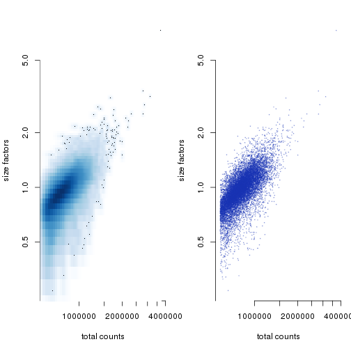
There are many methods for clustering of single cell RNA-seq data. The performance of each method may also depend on pre-processing steps, such as performing imputation or not. We wil compare these methods in a seperate document. Here we just illustrate the clustering reuslts using a simple kmeans method on the top 50 PCs.
all_num_clust = c(5:10,15:20,25:30)
df_hvg = df_hvg[,!grepl("^KM_",names(df_hvg))]
for(num_clust in all_num_clust){
cat(paste0("KM with ",num_clust," clusters.\n"))
kmeans_out = kmeans(reducedDim(sce_hvg,"PCA"),centers = num_clust,
iter.max = 5e2,algorithm = "MacQueen")
df_hvg = smart_df(df_hvg,VV = as.factor(kmeans_out$cluster))
names(df_hvg)[ncol(df_hvg)] = paste0("KM_",num_clust)
print(ggplot_custom(DATA = df_hvg,X = "TSNE1",
Y = "TSNE2",COL = paste0("KM_",num_clust)))
}
## KM with 5 clusters.
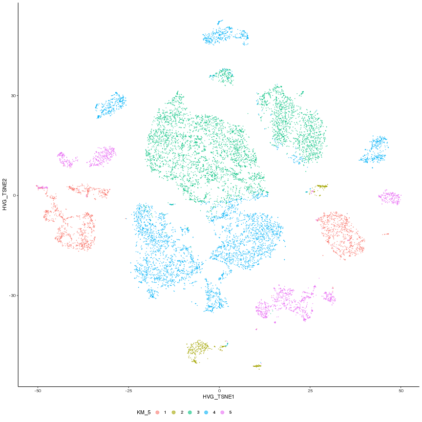
## KM with 6 clusters.
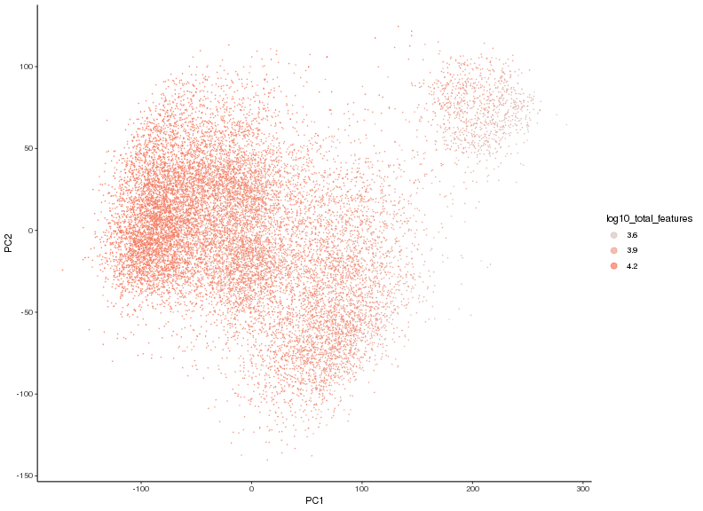
## KM with 7 clusters.
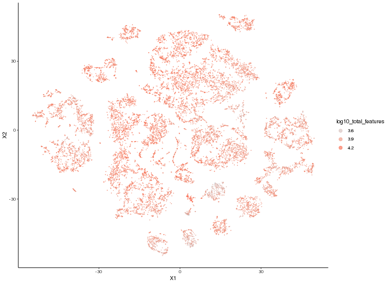
## KM with 8 clusters.
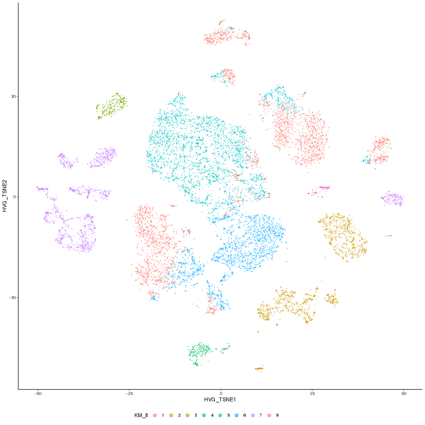
## KM with 9 clusters.
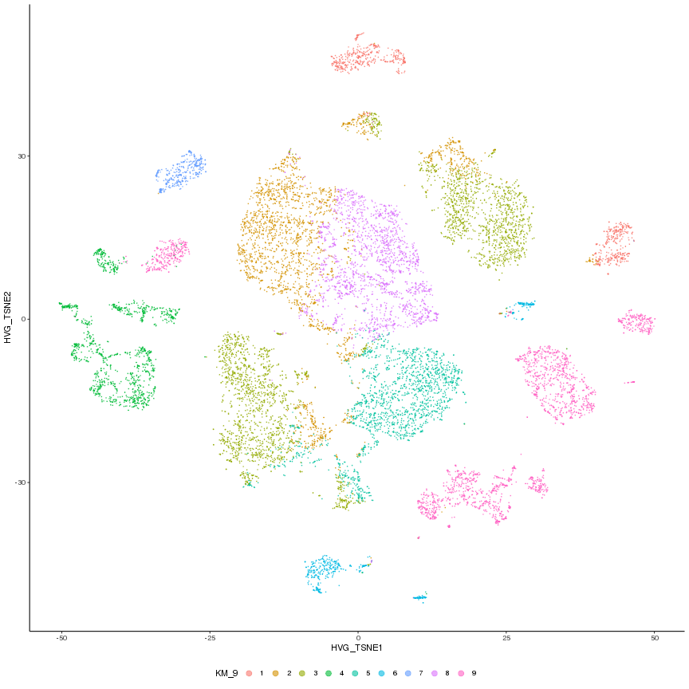
## KM with 10 clusters.
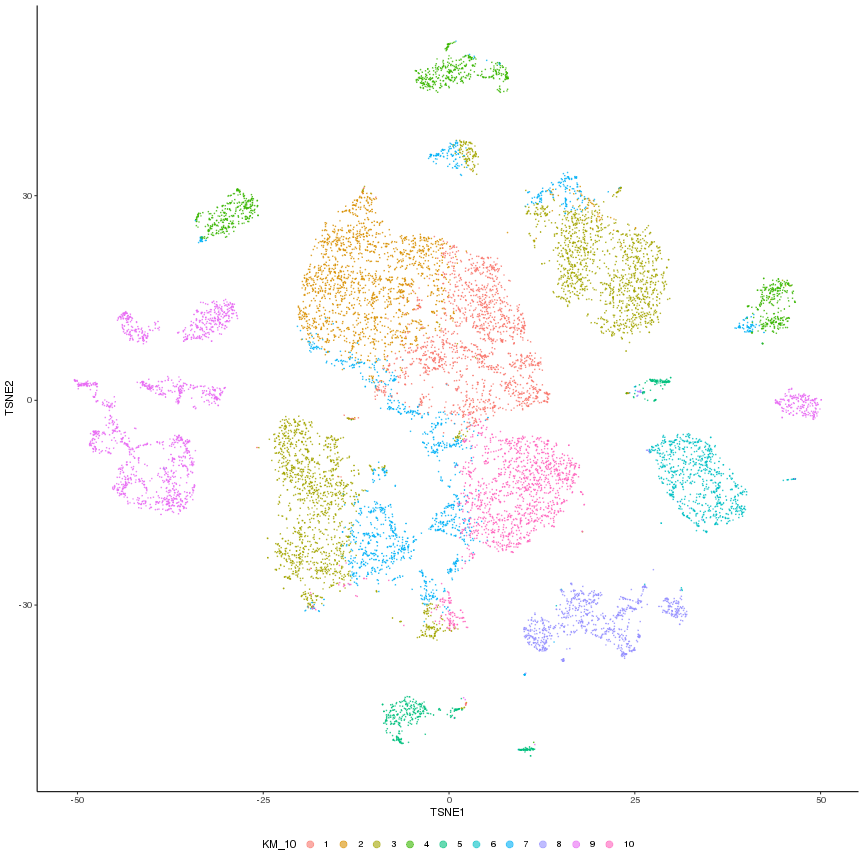
## KM with 15 clusters.
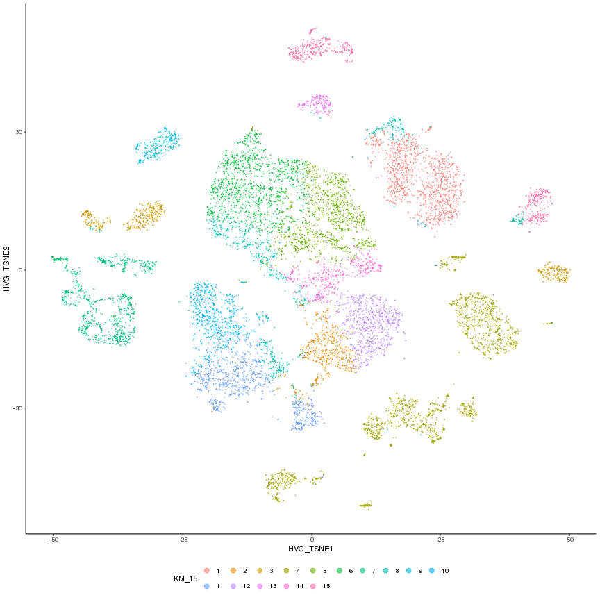
## KM with 16 clusters.
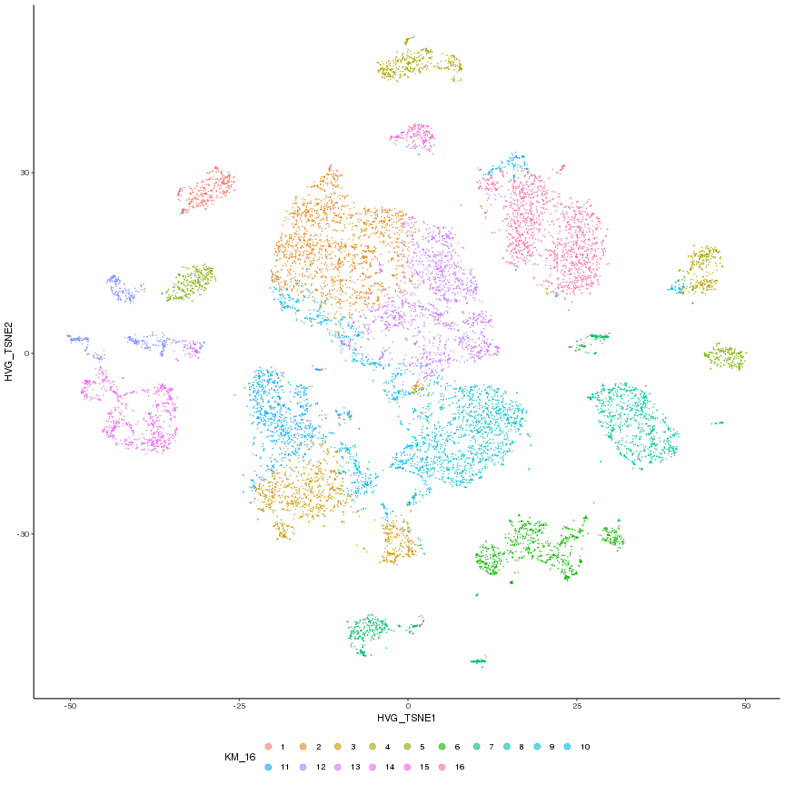
## KM with 17 clusters.
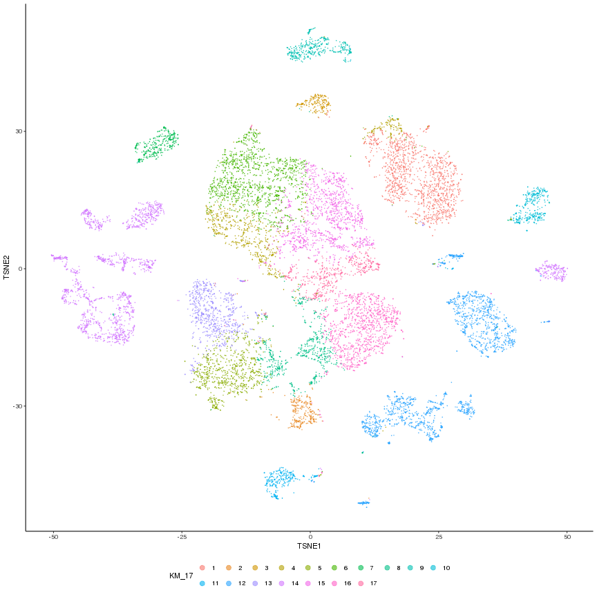
## KM with 18 clusters.
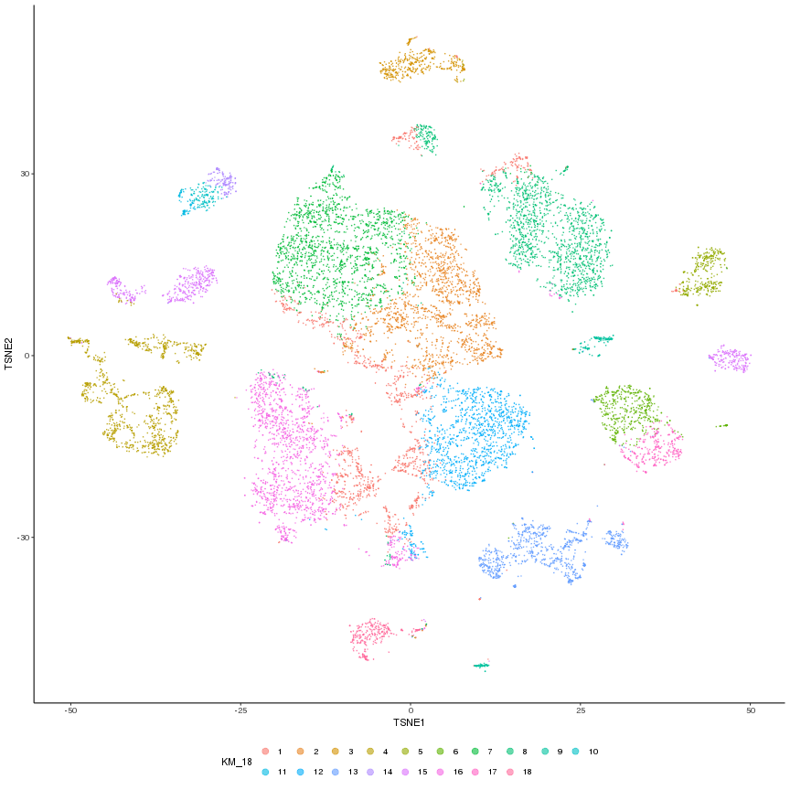
## KM with 19 clusters.
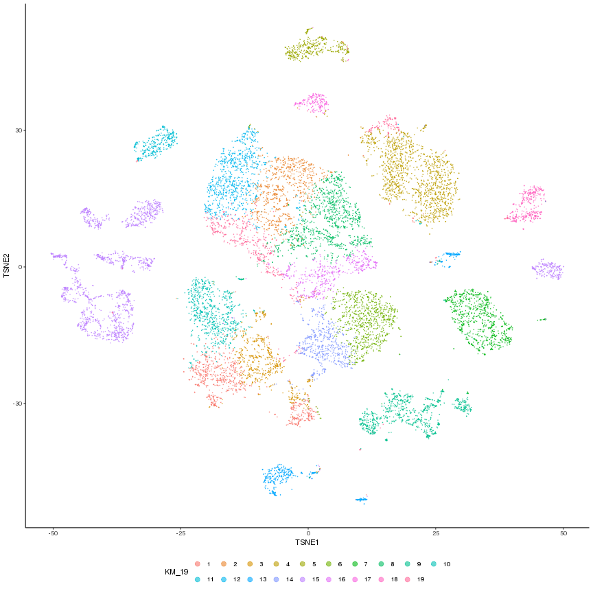
## KM with 20 clusters.
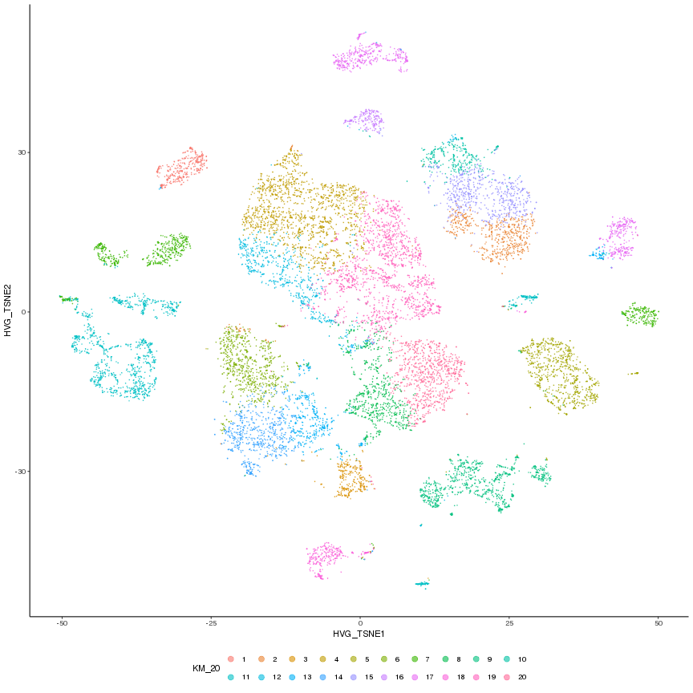
## KM with 25 clusters.
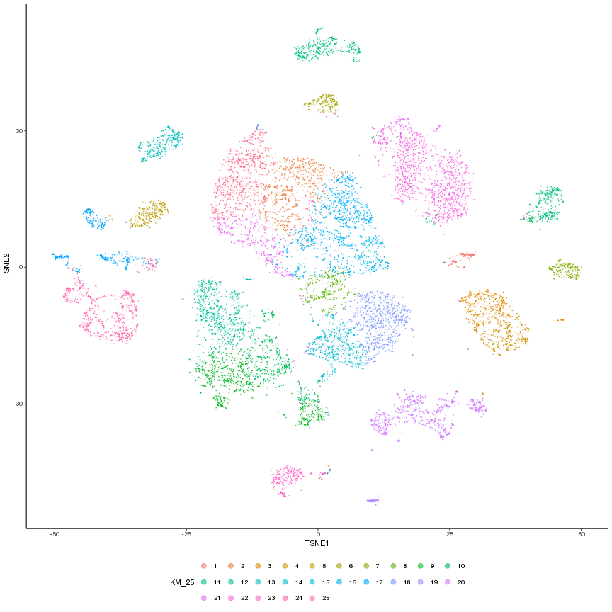
## KM with 26 clusters.
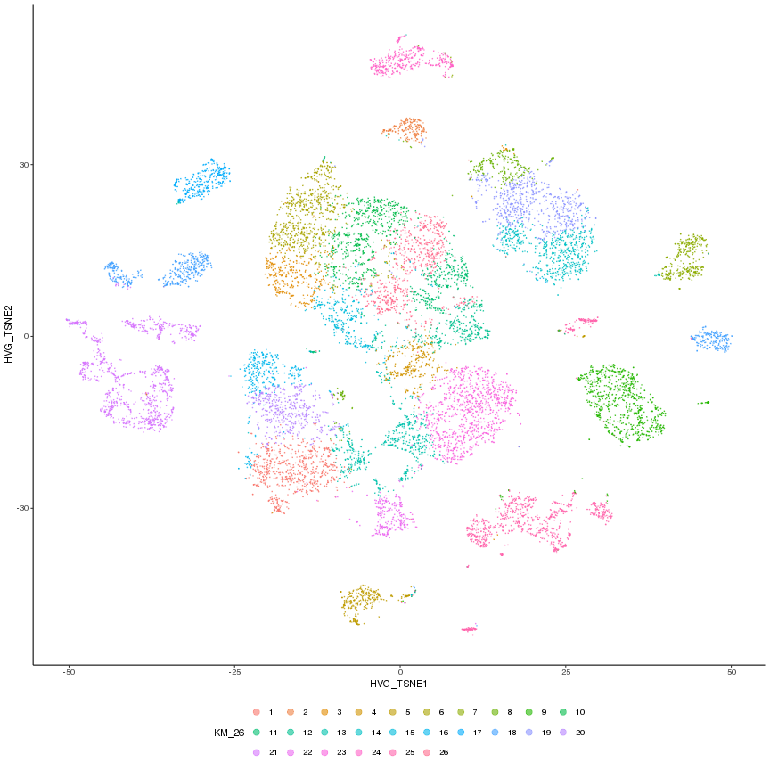
## KM with 27 clusters.

## KM with 28 clusters.

## KM with 29 clusters.

## KM with 30 clusters.

# Save temp image
saveRDS(list(sce_hvg=sce_hvg,df_hvg=df_hvg),"post_HVG_kmeans.rds")
Code used here is based on this link.
library(SC3)
rowData(sce_hvg)$feature_symbol = rowData(sce_hvg)$gene
date()
## [1] "Mon Nov 5 16:18:08 2018"
all_ks = c(5,10,12,15)
# all_ks = 10
sce_hvg = sc3(sce_hvg,ks = all_ks,biology = TRUE,
n_cores = 1,rand_seed = 100,svm_num_cells = 2000)
## Setting SC3 parameters...
## Your dataset contains more than 2000 cells. Adjusting the nstart parameter of kmeans to 50 for faster performance...
## Defining training cells for SVM using svm_num_cells parameter...
## Calculating distances between the cells...
## Performing transformations and calculating eigenvectors...
## Performing k-means clustering...
## Calculating consensus matrix...
## Calculating biology...
warnings()
date()
## [1] "Tue Nov 6 00:24:27 2018"
# Run SVM and predict labels of all other cells
date()
## [1] "Tue Nov 6 00:24:27 2018"
sce_hvg = sc3_run_svm(sce_hvg, ks = all_ks)
date()
## [1] "Tue Nov 6 00:26:56 2018"
saveRDS(list(sce_hvg=sce_hvg,all_ks=all_ks),"post_HVG_sc3.rds")
# rds = readRDS("post_HVG_sc3.rds"); sce_hvg = rds$sce_hvg; all_ks = rds$all_ks; rm(rds)
df_sc3 = smart_df(reducedDim(sce_hvg,"TSNE"))
rownames(df_sc3) = NULL
names(df_sc3) = paste0("TSNE",seq(ncol(df_sc3)))
df_sc3 = smart_df(sample_name = colnames(sce_hvg),df_sc3)
df_sc3$log10_total_features = colData(sce_hvg)$log10_total_features
df_sc3$sex = colData(sce_hvg)$sex
df_sc3$brain_hemisphere = colData(sce_hvg)$brain_hemisphere
df_sc3$brain_subregion = colData(sce_hvg)$brain_subregion
df_sc3$facs_sort_criteria = colData(sce_hvg)$facs_sort_criteria
df_sc3$class = colData(sce_hvg)$class
df_sc3$cluster = colData(sce_hvg)$cluster
df_sc3$cluster0 = colData(sce_hvg)$cluster0
all_vars = c("log10_total_features","sex","brain_hemisphere",
"brain_subregion","facs_sort_criteria","class","cluster0")
# TSNE plotting by cluster
for(one_ks in all_ks){
df_sc3$VV = as.factor(colData(sce_hvg)[,paste0("sc3_",one_ks,"_clusters")])
names(df_sc3)[names(df_sc3) == "VV"] = paste0("SC3_",one_ks)
print(ggplot_custom(DATA = df_sc3,X = "TSNE1",
Y = "TSNE2",COL = paste0("SC3_",one_ks)))
}

# SC3 Plotting
for(one_ks in all_ks){
# one_ks = all_ks[1]
cat(paste0("Num Clusters = ",one_ks,"\n"))
plotPCA(sce_hvg,
colour_by = paste0("sc3_",one_ks,"_clusters"),
size_by = paste0("sc3_",one_ks,"_log2_outlier_score"))
sc3_plot_consensus(sce_hvg,k = one_ks,
show_pdata = c(all_vars,
paste0("sc3_",one_ks,"_clusters"),
paste0("sc3_",one_ks,"_log2_outlier_score")))
# sc3_plot_silhouette(sce_hvg, k = one_ks)
sc3_plot_expression(sce_hvg, k = one_ks,
show_pdata = c(all_vars,
paste0("sc3_",one_ks,"_clusters"),
paste0("sc3_",one_ks,"_log2_outlier_score")))
sc3_plot_cluster_stability(sce_hvg, k = one_ks)
#sc3_plot_de_genes(sce_hvg, k = one_ks,
# show_pdata = c(all_vars,
# paste0("sc3_",one_ks,"_clusters"),
# paste0("sc3_",one_ks,"_log2_outlier_score")))
sc3_plot_markers(sce_hvg, k = one_ks,
show_pdata = c(all_vars,
paste0("sc3_",one_ks,"_clusters"),
paste0("sc3_",one_ks,"_log2_outlier_score")))
}
## Num Clusters = 5

## Num Clusters = 10

## Num Clusters = 12
## Num Clusters = 15
sessionInfo()
## R version 3.5.1 (2018-07-02)
## Platform: x86_64-pc-linux-gnu (64-bit)
## Running under: Red Hat Enterprise Linux Server 7.5 (Maipo)
##
## Matrix products: default
## BLAS: /nas/longleaf/home/pllittle/downloads/R-3.5.1/lib64/R/lib/libRblas.so
## LAPACK: /nas/longleaf/home/pllittle/downloads/R-3.5.1/lib64/R/lib/libRlapack.so
##
## locale:
## [1] LC_CTYPE=en_US.UTF-8 LC_NUMERIC=C
## [3] LC_TIME=en_US.UTF-8 LC_COLLATE=en_US.UTF-8
## [5] LC_MONETARY=en_US.UTF-8 LC_MESSAGES=en_US.UTF-8
## [7] LC_PAPER=en_US.UTF-8 LC_NAME=C
## [9] LC_ADDRESS=C LC_TELEPHONE=C
## [11] LC_MEASUREMENT=en_US.UTF-8 LC_IDENTIFICATION=C
##
## attached base packages:
## [1] parallel stats4 stats graphics grDevices utils datasets
## [8] methods base
##
## other attached packages:
## [1] SC3_1.8.0 Rtsne_0.13
## [3] svd_0.4.1 limma_3.36.3
## [5] scran_1.8.4 scater_1.8.4
## [7] ggplot2_3.0.0 biomaRt_2.36.1
## [9] DropletUtils_1.0.3 SingleCellExperiment_1.2.0
## [11] SummarizedExperiment_1.10.1 DelayedArray_0.6.5
## [13] BiocParallel_1.14.2 matrixStats_0.54.0
## [15] Biobase_2.40.0 GenomicRanges_1.32.6
## [17] GenomeInfoDb_1.16.0 IRanges_2.14.11
## [19] S4Vectors_0.18.3 BiocGenerics_0.26.0
## [21] rmarkdown_1.10 markdown_0.8
## [23] knitr_1.20
##
## loaded via a namespace (and not attached):
## [1] ggbeeswarm_0.6.0 colorspace_1.3-2
## [3] rjson_0.2.20 class_7.3-14
## [5] dynamicTreeCut_1.63-1 rprojroot_1.3-2
## [7] XVector_0.20.0 DT_0.4
## [9] bit64_0.9-7 mvtnorm_1.0-8
## [11] AnnotationDbi_1.42.1 codetools_0.2-15
## [13] tximport_1.8.0 doParallel_1.0.11
## [15] robustbase_0.93-2 cluster_2.0.7-1
## [17] pheatmap_1.0.10 shinydashboard_0.7.0
## [19] shiny_1.1.0 rrcov_1.4-4
## [21] compiler_3.5.1 httr_1.3.1
## [23] backports_1.1.2 assertthat_0.2.0
## [25] Matrix_1.2-14 lazyeval_0.2.1
## [27] later_0.7.3 htmltools_0.3.6
## [29] prettyunits_1.0.2 tools_3.5.1
## [31] bindrcpp_0.2.2 igraph_1.2.2
## [33] gtable_0.2.0 glue_1.3.0
## [35] GenomeInfoDbData_1.1.0 reshape2_1.4.3
## [37] dplyr_0.7.6 doRNG_1.7.1
## [39] Rcpp_0.12.18 gdata_2.18.0
## [41] iterators_1.0.10 DelayedMatrixStats_1.2.0
## [43] stringr_1.3.1 mime_0.5
## [45] irlba_2.3.2 rngtools_1.3.1
## [47] gtools_3.8.1 WriteXLS_4.0.0
## [49] statmod_1.4.30 XML_3.98-1.16
## [51] DEoptimR_1.0-8 edgeR_3.22.3
## [53] zlibbioc_1.26.0 scales_1.0.0
## [55] hms_0.4.2 promises_1.0.1
## [57] rhdf5_2.24.0 RColorBrewer_1.1-2
## [59] memoise_1.1.0 gridExtra_2.3
## [61] pkgmaker_0.27 stringi_1.2.4
## [63] RSQLite_2.1.1 highr_0.7
## [65] pcaPP_1.9-73 foreach_1.4.4
## [67] e1071_1.7-0 caTools_1.17.1.1
## [69] bibtex_0.4.2 rlang_0.2.2
## [71] pkgconfig_2.0.2 bitops_1.0-6
## [73] evaluate_0.11 lattice_0.20-35
## [75] ROCR_1.0-7 purrr_0.2.5
## [77] Rhdf5lib_1.2.1 bindr_0.1.1
## [79] htmlwidgets_1.2 labeling_0.3
## [81] bit_1.1-14 tidyselect_0.2.4
## [83] plyr_1.8.4 magrittr_1.5
## [85] R6_2.2.2 gplots_3.0.1
## [87] DBI_1.0.0 pillar_1.3.0
## [89] withr_2.1.2 RCurl_1.95-4.11
## [91] tibble_1.4.2 crayon_1.3.4
## [93] KernSmooth_2.23-15 viridis_0.5.1
## [95] progress_1.2.0 locfit_1.5-9.1
## [97] grid_3.5.1 data.table_1.11.4
## [99] blob_1.1.1 FNN_1.1.2.1
## [101] digest_0.6.16 xtable_1.8-3
## [103] httpuv_1.4.5 munsell_0.5.0
## [105] registry_0.5 beeswarm_0.2.3
## [107] viridisLite_0.3.0 vipor_0.4.5